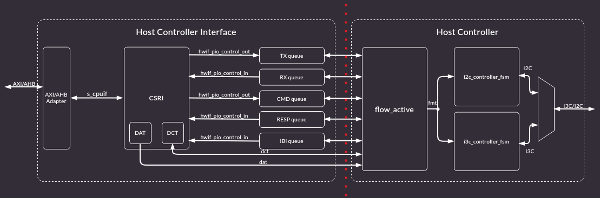
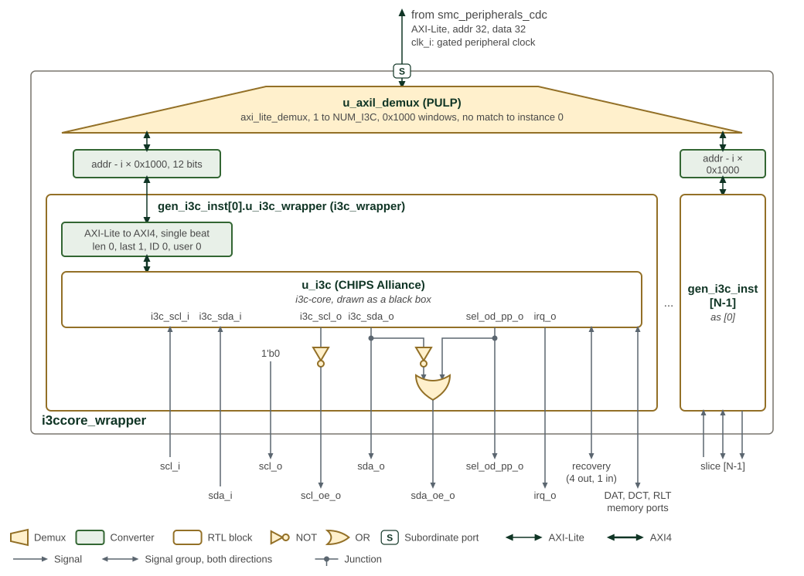

I3C Controller
The I3C controller is based on the CHIPS Alliance i3c-core. Controller and target behavior, the HCI queues, common command codes, and the bus protocol are specified by that design.

CHIPS Alliance i3c-core reference architecture shows the upstream core.
1. OCAH Modifications
When target mode is used, budget four core-clock cycles for the internal SCL-to-SDA response. A 12 ns turnaround limit requires approximately 333.3 MHz or faster before pad and routing allowance; see the Peripheral Timing Requirements section and the upstream PHY timing requirements. Controller-mode timing examples at lower frequencies do not demonstrate compliance with this target-mode limit.
SMC instantiates six controllers. i3ccore_wrapper exposes one AXI4-Lite
slave and selects the instance from the address. Instances are spaced by
0x1000, and each instance is presented with a 12-bit offset inside that
window.
i3c_wrapper drives the core’s AXI4 register port as a single beat: awlen
and arlen are 0 and wlast is 1. The core’s controller-mode SCL and SDA
outputs are bus levels. The wrapper turns those into open-drain pad enables:
SCL is driven only low, and SDA is driven in both directions while push-pull
mode is selected.
Each instance brings out its device-address, device-characteristic, and reverse-lookup memories, one interrupt, and the recovery pins.

OCAH I3C wrapper shows that wrapper around the CHIPS Alliance core,
which it draws as a black box. Parentheses after an instance name give its
module or, for a block taken from another project, that project; the demux
is a PULP axi_lite_demux. i3ccore_wrapper runs on one clock, clk_i;
in the SMC that is the gated peripheral clock, and its AXI4-Lite port, with
32-bit address and data, arrives through smc_peripherals_cdc. The demux
u_axil_demux registers every channel and allows eight outstanding
transactions. It has no error slave: an address outside every instance
window reaches instance 0. Each generate block subtracts its index times
0x1000 from the address before i3c_wrapper sees it.
Inside i3c_wrapper, the converter tie-offs are awlen/arlen 0, wlast 1,
and zero ID and user. The gates below the core are the pad-enable
logic: scl_o is tied low and scl_oe_o is the inverse of the core’s SCL
level, so the pad only pulls SCL low; sda_o is the core’s SDA level and
sda_oe_o is sel_od_pp_o OR the inverse of sda_o. The core’s own SDA
output enable, which it drives only in target mode, is not used.
irq_o, the five recovery signals and the DAT, DCT and reverse-lookup
memory ports pass straight through to per-instance vectors on the
i3ccore_wrapper boundary. In the SMC recovery_payload_available_o,
recovery_image_activated_o, peripheral_reset_o and escalated_reset_o are
left unconnected, peripheral_reset_done_i is tied low, and the interrupts
reach peripheral interrupts 12 to 17.
The register map below reproduces the upstream SystemRDL descriptions; those
under I3C_EC are upstream’s own rather than MIPI I3C HCI text. The fields below
differ from or go beyond those descriptions.
These read back the value written but reach no logic:
-
PIOControl.PIO_CONTROL.ENABLE: the PIO queues are always enabled. -
I3C_EC.StdbyCtrlMode.STBY_CR_CONTROL.TARGET_XACT_ENABLE: target transactions cannot be disabled. -
I3C_EC.StdbyCtrlMode.STBY_CR_CONTROL.RSTACT_DEFBYTE_02: RSTACT with defining byte 0x02 is always ACKed. -
I3C_EC.StdbyCtrlMode.STBY_CR_CCC_CONFIG_RSTACT_PARAMS.RESET_TIME_PERIPHERALandRESET_TIME_TARGET: GET RSTACT with defining byte 0x81 or 0x82 returns 0xFF. -
I3C_EC.SoCMgmtIf.REC_INTF_CFG.REC_INTF_BYPASS:DISABLE_LOOPBACKties the bypass off, so recovery always goes through the I3C core.
These misreport the core:
-
I3C_EC.StdbyCtrlMode.STBY_CR_CAPABILITIES.DAA_ENTDAA_SUPPORTreads 0, but ENTDAA is supported. -
I3C_EC.StdbyCtrlMode.STBY_CR_CONTROL.STBY_CR_ENABLE_INITmode2’b11behaves as2’b01(active controller), not Hot-Join-then-standby.
These behave as follows, which the descriptions leave unstated:
-
I3C_EC.TTI.TARGET_ERR_CNT_TE3counts parity errors on the ENTDAA-assigned dynamic address;TARGET_ERR_CNT_TE4counts reserved bytes other than7’h7Ewith R/W=1. -
I3C_EC.TTI.TARGET_ERR_CNT_RI_RX_FIFO_OVERFLOWandTARGET_ERR_CNT_RI_INDIRECT_FIFO_OVERFLOW: the enable inTARGET_ERR_CTRLgates detection, so an overflow while it is clear is neither counted nor interrupts. -
PIOControl.DATA_BUFFER_THLD_CTRL:RX_START_THLDandTX_BUF_THLDtest free space,TX_START_THLDandRX_BUF_THLDstored entries; each encodes2^(N+1)entries. -
PIOControl.QUEUE_THLD_CTRL: raw entry counts, free forCMD_EMPTY_BUF_THLDand stored forRESP_BUF_THLDandIBI_STATUS_THLD. Only these ready thresholds are implemented; start thresholds are unconnected. -
DCT.DCT_MEMORY:PID_LOholds the first two (most significant) ENTDAA PID bytes andPID_HIthe next four.DYNAMIC_ADDRESSholds the address in bits 7:1 and its odd parity in bit 0.
Consult the i3c-core documentation for the controller. The register map of this wrapper follows.
2. Memory Map and Register Reference
2.1. Memory Map
2.1.1. Integration Limits
The SoC Management Interface header at 0x300 reports CAP_LENGTH = 0x1A
DWORDs. This is inconsistent with the next capability header at 0x398: the
span is 0x98 bytes, or 0x26 DWORDs. A generic walker that trusts the reported
length advances to 0x368, inside the timing registers, and misinterprets data
as a capability header. Software for this implementation must use the
offsets in this paragraph rather than discovering that boundary from CAP_LENGTH.
The DAT and DCT capability fields advertise TABLE_SIZE = 127, but only 16
independent entries are implemented. Index decoding retains four bits, so
higher window slots alias lower entries rather than providing extra storage.
For example, DAT slot 16 at 0x480 aliases slot 0 at 0x400; DCT slot 16 at
0x900 aliases slot 0 at 0x800. Limit accesses to indexes 0–15. The complete
windows in the generated map describe address decoding, not independent
128-entry capacity.
2.2. Detailed Register Map
OCA I3C Controller Wrapper Address Map
Wrapper address map instantiating the per-controller I3C CSR blocks.
Register Arrays:
- i3c_csr[6].I3CBase.HCI_VERSION: 6 registers, base 0x0, stride 0x1000
- i3c_csr[6].I3CBase.HC_CONTROL: 6 registers, base 0x4, stride 0x1000
- i3c_csr[6].I3CBase.CONTROLLER_DEVICE_ADDR: 6 registers, base 0x8, stride 0x1000
- i3c_csr[6].I3CBase.HC_CAPABILITIES: 6 registers, base 0xC, stride 0x1000
- i3c_csr[6].I3CBase.RESET_CONTROL: 6 registers, base 0x10, stride 0x1000
- i3c_csr[6].I3CBase.PRESENT_STATE: 6 registers, base 0x14, stride 0x1000
- i3c_csr[6].I3CBase.INTR_STATUS: 6 registers, base 0x20, stride 0x1000
- i3c_csr[6].I3CBase.INTR_STATUS_ENABLE: 6 registers, base 0x24, stride 0x1000
- i3c_csr[6].I3CBase.INTR_SIGNAL_ENABLE: 6 registers, base 0x28, stride 0x1000
- i3c_csr[6].I3CBase.INTR_FORCE: 6 registers, base 0x2C, stride 0x1000
- i3c_csr[6].I3CBase.DAT_SECTION_OFFSET: 6 registers, base 0x30, stride 0x1000
- i3c_csr[6].I3CBase.DCT_SECTION_OFFSET: 6 registers, base 0x34, stride 0x1000
- i3c_csr[6].I3CBase.RING_HEADERS_SECTION_OFFSET: 6 registers, base 0x38, stride 0x1000
- i3c_csr[6].I3CBase.PIO_SECTION_OFFSET: 6 registers, base 0x3C, stride 0x1000
- i3c_csr[6].I3CBase.EXT_CAPS_SECTION_OFFSET: 6 registers, base 0x40, stride 0x1000
- i3c_csr[6].I3CBase.INT_CTRL_CMDS_EN: 6 registers, base 0x4C, stride 0x1000
- i3c_csr[6].I3CBase.IBI_NOTIFY_CTRL: 6 registers, base 0x58, stride 0x1000
- i3c_csr[6].I3CBase.IBI_DATA_ABORT_CTRL: 6 registers, base 0x5C, stride 0x1000
- i3c_csr[6].I3CBase.DEV_CTX_BASE_LO: 6 registers, base 0x60, stride 0x1000
- i3c_csr[6].I3CBase.DEV_CTX_BASE_HI: 6 registers, base 0x64, stride 0x1000
- i3c_csr[6].I3CBase.DEV_CTX_SG: 6 registers, base 0x68, stride 0x1000
- i3c_csr[6].PIOControl.COMMAND_PORT: 6 registers, base 0x80, stride 0x1000
- i3c_csr[6].PIOControl.RESPONSE_PORT: 6 registers, base 0x84, stride 0x1000
- i3c_csr[6].PIOControl.TX_DATA_PORT: 6 registers, base 0x88, stride 0x1000
- i3c_csr[6].PIOControl.RX_DATA_PORT: 6 registers, base 0x88, stride 0x1000
- i3c_csr[6].PIOControl.IBI_PORT: 6 registers, base 0x8C, stride 0x1000
- i3c_csr[6].PIOControl.QUEUE_THLD_CTRL: 6 registers, base 0x90, stride 0x1000
- i3c_csr[6].PIOControl.DATA_BUFFER_THLD_CTRL: 6 registers, base 0x94, stride 0x1000
- i3c_csr[6].PIOControl.QUEUE_SIZE: 6 registers, base 0x98, stride 0x1000
- i3c_csr[6].PIOControl.ALT_QUEUE_SIZE: 6 registers, base 0x9C, stride 0x1000
- i3c_csr[6].PIOControl.PIO_INTR_STATUS: 6 registers, base 0xA0, stride 0x1000
- i3c_csr[6].PIOControl.PIO_INTR_STATUS_ENABLE: 6 registers, base 0xA4, stride 0x1000
- i3c_csr[6].PIOControl.PIO_INTR_SIGNAL_ENABLE: 6 registers, base 0xA8, stride 0x1000
- i3c_csr[6].PIOControl.PIO_INTR_FORCE: 6 registers, base 0xAC, stride 0x1000
- i3c_csr[6].PIOControl.PIO_CONTROL: 6 registers, base 0xB0, stride 0x1000
- i3c_csr[6].I3C_EC.SecFwRecoveryIf.EXTCAP_HEADER: 6 registers, base 0x100, stride 0x1000
- i3c_csr[6].I3C_EC.SecFwRecoveryIf.PROT_CAP_0: 6 registers, base 0x104, stride 0x1000
- i3c_csr[6].I3C_EC.SecFwRecoveryIf.PROT_CAP_1: 6 registers, base 0x108, stride 0x1000
- i3c_csr[6].I3C_EC.SecFwRecoveryIf.PROT_CAP_2: 6 registers, base 0x10C, stride 0x1000
- i3c_csr[6].I3C_EC.SecFwRecoveryIf.PROT_CAP_3: 6 registers, base 0x110, stride 0x1000
- i3c_csr[6].I3C_EC.SecFwRecoveryIf.DEVICE_ID_0: 6 registers, base 0x114, stride 0x1000
- i3c_csr[6].I3C_EC.SecFwRecoveryIf.DEVICE_ID_1: 6 registers, base 0x118, stride 0x1000
- i3c_csr[6].I3C_EC.SecFwRecoveryIf.DEVICE_ID_2: 6 registers, base 0x11C, stride 0x1000
- i3c_csr[6].I3C_EC.SecFwRecoveryIf.DEVICE_ID_3: 6 registers, base 0x120, stride 0x1000
- i3c_csr[6].I3C_EC.SecFwRecoveryIf.DEVICE_ID_4: 6 registers, base 0x124, stride 0x1000
- i3c_csr[6].I3C_EC.SecFwRecoveryIf.DEVICE_ID_5: 6 registers, base 0x128, stride 0x1000
- i3c_csr[6].I3C_EC.SecFwRecoveryIf.DEVICE_ID_RESERVED: 6 registers, base 0x12C, stride 0x1000
- i3c_csr[6].I3C_EC.SecFwRecoveryIf.DEVICE_STATUS_0: 6 registers, base 0x130, stride 0x1000
- i3c_csr[6].I3C_EC.SecFwRecoveryIf.DEVICE_STATUS_1: 6 registers, base 0x134, stride 0x1000
- i3c_csr[6].I3C_EC.SecFwRecoveryIf.DEVICE_RESET: 6 registers, base 0x138, stride 0x1000
- i3c_csr[6].I3C_EC.SecFwRecoveryIf.RECOVERY_CTRL: 6 registers, base 0x13C, stride 0x1000
- i3c_csr[6].I3C_EC.SecFwRecoveryIf.RECOVERY_STATUS: 6 registers, base 0x140, stride 0x1000
- i3c_csr[6].I3C_EC.SecFwRecoveryIf.HW_STATUS: 6 registers, base 0x144, stride 0x1000
- i3c_csr[6].I3C_EC.SecFwRecoveryIf.INDIRECT_FIFO_CTRL_0: 6 registers, base 0x148, stride 0x1000
- i3c_csr[6].I3C_EC.SecFwRecoveryIf.INDIRECT_FIFO_CTRL_1: 6 registers, base 0x14C, stride 0x1000
- i3c_csr[6].I3C_EC.SecFwRecoveryIf.INDIRECT_FIFO_STATUS_0: 6 registers, base 0x150, stride 0x1000
- i3c_csr[6].I3C_EC.SecFwRecoveryIf.INDIRECT_FIFO_STATUS_1: 6 registers, base 0x154, stride 0x1000
- i3c_csr[6].I3C_EC.SecFwRecoveryIf.INDIRECT_FIFO_STATUS_2: 6 registers, base 0x158, stride 0x1000
- i3c_csr[6].I3C_EC.SecFwRecoveryIf.INDIRECT_FIFO_STATUS_3: 6 registers, base 0x15C, stride 0x1000
- i3c_csr[6].I3C_EC.SecFwRecoveryIf.INDIRECT_FIFO_STATUS_4: 6 registers, base 0x160, stride 0x1000
- i3c_csr[6].I3C_EC.SecFwRecoveryIf.INDIRECT_FIFO_RESERVED: 6 registers, base 0x164, stride 0x1000
- i3c_csr[6].I3C_EC.SecFwRecoveryIf.INDIRECT_FIFO_DATA: 6 registers, base 0x168, stride 0x1000
- i3c_csr[6].I3C_EC.StdbyCtrlMode.EXTCAP_HEADER: 6 registers, base 0x180, stride 0x1000
- i3c_csr[6].I3C_EC.StdbyCtrlMode.STBY_CR_CONTROL: 6 registers, base 0x184, stride 0x1000
- i3c_csr[6].I3C_EC.StdbyCtrlMode.STBY_CR_DEVICE_ADDR: 6 registers, base 0x188, stride 0x1000
- i3c_csr[6].I3C_EC.StdbyCtrlMode.STBY_CR_CAPABILITIES: 6 registers, base 0x18C, stride 0x1000
- i3c_csr[6].I3C_EC.StdbyCtrlMode.STBY_CR_VIRTUAL_DEVICE_CHAR: 6 registers, base 0x190, stride 0x1000
- i3c_csr[6].I3C_EC.StdbyCtrlMode.STBY_CR_STATUS: 6 registers, base 0x194, stride 0x1000
- i3c_csr[6].I3C_EC.StdbyCtrlMode.STBY_CR_DEVICE_CHAR: 6 registers, base 0x198, stride 0x1000
- i3c_csr[6].I3C_EC.StdbyCtrlMode.STBY_CR_DEVICE_PID_LO: 6 registers, base 0x19C, stride 0x1000
- i3c_csr[6].I3C_EC.StdbyCtrlMode.STBY_CR_INTR_STATUS: 6 registers, base 0x1A0, stride 0x1000
- i3c_csr[6].I3C_EC.StdbyCtrlMode.STBY_CR_VIRTUAL_DEVICE_PID_LO: 6 registers, base 0x1A4, stride 0x1000
- i3c_csr[6].I3C_EC.StdbyCtrlMode.STBY_CR_INTR_SIGNAL_ENABLE: 6 registers, base 0x1A8, stride 0x1000
- i3c_csr[6].I3C_EC.StdbyCtrlMode.STBY_CR_INTR_FORCE: 6 registers, base 0x1AC, stride 0x1000
- i3c_csr[6].I3C_EC.StdbyCtrlMode.STBY_CR_CCC_CONFIG_GETCAPS: 6 registers, base 0x1B0, stride 0x1000
- i3c_csr[6].I3C_EC.StdbyCtrlMode.STBY_CR_CCC_CONFIG_RSTACT_PARAMS: 6 registers, base 0x1B4, stride 0x1000
- i3c_csr[6].I3C_EC.StdbyCtrlMode.STBY_CR_VIRT_DEVICE_ADDR: 6 registers, base 0x1B8, stride 0x1000
- i3c_csr[6].I3C_EC.StdbyCtrlMode.STBY_CR_MWL: 6 registers, base 0x1BC, stride 0x1000
- i3c_csr[6].I3C_EC.StdbyCtrlMode.STBY_CR_MRL: 6 registers, base 0x1C0, stride 0x1000
- i3c_csr[6].I3C_EC.TTI.EXTCAP_HEADER: 6 registers, base 0x200, stride 0x1000
- i3c_csr[6].I3C_EC.TTI.CONTROL: 6 registers, base 0x204, stride 0x1000
- i3c_csr[6].I3C_EC.TTI.STATUS: 6 registers, base 0x208, stride 0x1000
- i3c_csr[6].I3C_EC.TTI.RESET_CONTROL: 6 registers, base 0x20C, stride 0x1000
- i3c_csr[6].I3C_EC.TTI.QUEUE_STATUS: 6 registers, base 0x210, stride 0x1000
- i3c_csr[6].I3C_EC.TTI.DESC_QUEUE_DEPTH: 6 registers, base 0x214, stride 0x1000
- i3c_csr[6].I3C_EC.TTI.DATA_QUEUE_DEPTH: 6 registers, base 0x218, stride 0x1000
- i3c_csr[6].I3C_EC.TTI.IBI_QUEUE_DEPTH: 6 registers, base 0x21C, stride 0x1000
- i3c_csr[6].I3C_EC.TTI.INTERRUPT_STATUS: 6 registers, base 0x220, stride 0x1000
- i3c_csr[6].I3C_EC.TTI.INTERRUPT_ENABLE: 6 registers, base 0x224, stride 0x1000
- i3c_csr[6].I3C_EC.TTI.INTERRUPT_FORCE: 6 registers, base 0x228, stride 0x1000
- i3c_csr[6].I3C_EC.TTI.TARGET_ERR_CTRL: 6 registers, base 0x22C, stride 0x1000
- i3c_csr[6].I3C_EC.TTI.TARGET_ERR_INTR_STATUS: 6 registers, base 0x230, stride 0x1000
- i3c_csr[6].I3C_EC.TTI.TARGET_ERR_INTR_ENABLE: 6 registers, base 0x234, stride 0x1000
- i3c_csr[6].I3C_EC.TTI.TARGET_ERR_INTR_FORCE: 6 registers, base 0x238, stride 0x1000
- i3c_csr[6].I3C_EC.TTI.TARGET_ERR_CNT_TE0: 6 registers, base 0x23C, stride 0x1000
- i3c_csr[6].I3C_EC.TTI.TARGET_ERR_CNT_TE1: 6 registers, base 0x240, stride 0x1000
- i3c_csr[6].I3C_EC.TTI.TARGET_ERR_CNT_TE2: 6 registers, base 0x244, stride 0x1000
- i3c_csr[6].I3C_EC.TTI.TARGET_ERR_CNT_TE3: 6 registers, base 0x248, stride 0x1000
- i3c_csr[6].I3C_EC.TTI.TARGET_ERR_CNT_TE4: 6 registers, base 0x24C, stride 0x1000
- i3c_csr[6].I3C_EC.TTI.TARGET_ERR_CNT_TE5: 6 registers, base 0x250, stride 0x1000
- i3c_csr[6].I3C_EC.TTI.TARGET_ERR_CNT_FRAMING: 6 registers, base 0x254, stride 0x1000
- i3c_csr[6].I3C_EC.TTI.TARGET_ERR_CNT_RI_PEC: 6 registers, base 0x258, stride 0x1000
- i3c_csr[6].I3C_EC.TTI.TARGET_ERR_CNT_RI_LENGTH: 6 registers, base 0x25C, stride 0x1000
- i3c_csr[6].I3C_EC.TTI.TARGET_ERR_CNT_RI_READONLY: 6 registers, base 0x260, stride 0x1000
- i3c_csr[6].I3C_EC.TTI.TARGET_ERR_CNT_RI_UNSUPPORTED: 6 registers, base 0x264, stride 0x1000
- i3c_csr[6].I3C_EC.TTI.TARGET_ERR_CNT_RI_RX_FIFO_OVERFLOW: 6 registers, base 0x268, stride 0x1000
- i3c_csr[6].I3C_EC.TTI.TARGET_ERR_CNT_RI_INDIRECT_FIFO_OVERFLOW: 6 registers, base 0x26C, stride 0x1000
- i3c_csr[6].I3C_EC.TTI.RX_DESC_QUEUE_PORT: 6 registers, base 0x270, stride 0x1000
- i3c_csr[6].I3C_EC.TTI.RX_DATA_PORT: 6 registers, base 0x274, stride 0x1000
- i3c_csr[6].I3C_EC.TTI.TX_DESC_QUEUE_PORT: 6 registers, base 0x278, stride 0x1000
- i3c_csr[6].I3C_EC.TTI.TX_DATA_PORT: 6 registers, base 0x27C, stride 0x1000
- i3c_csr[6].I3C_EC.TTI.IBI_PORT: 6 registers, base 0x280, stride 0x1000
- i3c_csr[6].I3C_EC.TTI.QUEUE_SIZE: 6 registers, base 0x284, stride 0x1000
- i3c_csr[6].I3C_EC.TTI.IBI_QUEUE_SIZE: 6 registers, base 0x288, stride 0x1000
- i3c_csr[6].I3C_EC.TTI.QUEUE_THLD_CTRL: 6 registers, base 0x28C, stride 0x1000
- i3c_csr[6].I3C_EC.TTI.DATA_BUFFER_THLD_CTRL: 6 registers, base 0x290, stride 0x1000
- i3c_csr[6].I3C_EC.SoCMgmtIf.EXTCAP_HEADER: 6 registers, base 0x300, stride 0x1000
- i3c_csr[6].I3C_EC.SoCMgmtIf.SOC_MGMT_CONTROL: 6 registers, base 0x304, stride 0x1000
- i3c_csr[6].I3C_EC.SoCMgmtIf.SOC_MGMT_STATUS: 6 registers, base 0x308, stride 0x1000
- i3c_csr[6].I3C_EC.SoCMgmtIf.REC_INTF_CFG: 6 registers, base 0x30C, stride 0x1000
- i3c_csr[6].I3C_EC.SoCMgmtIf.REC_INTF_REG_W1C_ACCESS: 6 registers, base 0x310, stride 0x1000
- i3c_csr[6].I3C_EC.SoCMgmtIf.SOC_MGMT_RSVD_2: 6 registers, base 0x314, stride 0x1000
- i3c_csr[6].I3C_EC.SoCMgmtIf.SOC_MGMT_RSVD_3: 6 registers, base 0x318, stride 0x1000
- i3c_csr[6].I3C_EC.SoCMgmtIf.SOC_PAD_CONF: 6 registers, base 0x31C, stride 0x1000
- i3c_csr[6].I3C_EC.SoCMgmtIf.SOC_PAD_ATTR: 6 registers, base 0x320, stride 0x1000
- i3c_csr[6].I3C_EC.SoCMgmtIf.SOC_MGMT_FEATURE_2: 6 registers, base 0x324, stride 0x1000
- i3c_csr[6].I3C_EC.SoCMgmtIf.SOC_MGMT_FEATURE_3: 6 registers, base 0x328, stride 0x1000
- i3c_csr[6].I3C_EC.SoCMgmtIf.T_R_REG: 6 registers, base 0x32C, stride 0x1000
- i3c_csr[6].I3C_EC.SoCMgmtIf.T_F_REG: 6 registers, base 0x330, stride 0x1000
- i3c_csr[6].I3C_EC.SoCMgmtIf.T_SU_DAT_REG: 6 registers, base 0x334, stride 0x1000
- i3c_csr[6].I3C_EC.SoCMgmtIf.T_SU_DAT_I2C_REG: 6 registers, base 0x338, stride 0x1000
- i3c_csr[6].I3C_EC.SoCMgmtIf.T_HD_DAT_REG: 6 registers, base 0x33C, stride 0x1000
- i3c_csr[6].I3C_EC.SoCMgmtIf.T_HIGH_REG: 6 registers, base 0x340, stride 0x1000
- i3c_csr[6].I3C_EC.SoCMgmtIf.T_HIGH_OD_REG: 6 registers, base 0x344, stride 0x1000
- i3c_csr[6].I3C_EC.SoCMgmtIf.T_HIGH_INIT_OD_REG: 6 registers, base 0x348, stride 0x1000
- i3c_csr[6].I3C_EC.SoCMgmtIf.T_HIGH_I2C_REG: 6 registers, base 0x34C, stride 0x1000
- i3c_csr[6].I3C_EC.SoCMgmtIf.T_LOW_REG: 6 registers, base 0x350, stride 0x1000
- i3c_csr[6].I3C_EC.SoCMgmtIf.T_LOW_OD_REG: 6 registers, base 0x354, stride 0x1000
- i3c_csr[6].I3C_EC.SoCMgmtIf.T_LOW_I2C_REG: 6 registers, base 0x358, stride 0x1000
- i3c_csr[6].I3C_EC.SoCMgmtIf.T_HD_STA_REG: 6 registers, base 0x35C, stride 0x1000
- i3c_csr[6].I3C_EC.SoCMgmtIf.T_HD_STA_I2C_REG: 6 registers, base 0x360, stride 0x1000
- i3c_csr[6].I3C_EC.SoCMgmtIf.T_HD_RSTA_REG: 6 registers, base 0x364, stride 0x1000
- i3c_csr[6].I3C_EC.SoCMgmtIf.T_SU_STA_REG: 6 registers, base 0x368, stride 0x1000
- i3c_csr[6].I3C_EC.SoCMgmtIf.T_SU_STA_I2C_REG: 6 registers, base 0x36C, stride 0x1000
- i3c_csr[6].I3C_EC.SoCMgmtIf.T_SU_STO_REG: 6 registers, base 0x370, stride 0x1000
- i3c_csr[6].I3C_EC.SoCMgmtIf.T_SU_STO_I2C_REG: 6 registers, base 0x374, stride 0x1000
- i3c_csr[6].I3C_EC.SoCMgmtIf.T_DS_OD_REG: 6 registers, base 0x378, stride 0x1000
- i3c_csr[6].I3C_EC.SoCMgmtIf.T_FREE_REG: 6 registers, base 0x37C, stride 0x1000
- i3c_csr[6].I3C_EC.SoCMgmtIf.T_FREE_I2C_REG: 6 registers, base 0x380, stride 0x1000
- i3c_csr[6].I3C_EC.SoCMgmtIf.T_AVAL_REG: 6 registers, base 0x384, stride 0x1000
- i3c_csr[6].I3C_EC.SoCMgmtIf.T_IDLE_REG: 6 registers, base 0x388, stride 0x1000
- i3c_csr[6].I3C_EC.SoCMgmtIf.HDR_TIMEOUT_EN_REG: 6 registers, base 0x38C, stride 0x1000
- i3c_csr[6].I3C_EC.SoCMgmtIf.T_HDR_TIMEOUT_REG: 6 registers, base 0x390, stride 0x1000
- i3c_csr[6].I3C_EC.CtrlCfg.EXTCAP_HEADER: 6 registers, base 0x398, stride 0x1000
- i3c_csr[6].I3C_EC.CtrlCfg.CONTROLLER_CONFIG: 6 registers, base 0x39C, stride 0x1000
- i3c_csr[6].I3C_EC.TERMINATION_EXTCAP_HEADER: 6 registers, base 0x3A0, stride 0x1000
- i3c_csr[6].DAT.DAT_MEMORY[128]: 768 registers, base 0x400 (i3c_csr x6 stride 0x1000, DAT_MEMORY x128 stride 0x8)
- i3c_csr[6].DCT.DCT_MEMORY[128]: 768 registers, base 0x800 (i3c_csr x6 stride 0x1000, DCT_MEMORY x128 stride 0x10)
Register List:
| Address | Name | Access | Description |
|---|---|---|---|
| 0x0 - 0x5000 | i3c_csr[6].I3CBase.HCI_VERSION | R | Identifies the implemented MIPI I3C HCI version. |
| 0x4 - 0x5004 | i3c_csr[6].I3CBase.HC_CONTROL | RW | Controls host-controller bus operation, mode selection, transaction abort, and Hot-Join handling. |
| 0x8 - 0x5008 | i3c_csr[6].I3CBase.CONTROLLER_DEVICE_ADDR | RW | Configures the controller dynamic address and indicates whether that address is valid. |
| 0xC - 0x500C | i3c_csr[6].I3CBase.HC_CAPABILITIES | R | Reports the host-controller capabilities implemented by this instance. |
| 0x10 - 0x5010 | i3c_csr[6].I3CBase.RESET_CONTROL | RW | Requests a controller soft reset or selective PIO queue and FIFO resets. Reset requests are self-clearing. |
| 0x14 - 0x5014 | i3c_csr[6].I3CBase.PRESENT_STATE | R | Reports current controller state, including active-controller bus ownership. |
| 0x20 - 0x5020 | i3c_csr[6].I3CBase.INTR_STATUS | RW | Reports host-controller error and exceptional-condition status. |
| 0x24 - 0x5024 | i3c_csr[6].I3CBase.INTR_STATUS_ENABLE | RW | Enables individual host-controller interrupt status sources. |
| 0x28 - 0x5028 | i3c_csr[6].I3CBase.INTR_SIGNAL_ENABLE | RW | Routes enabled host-controller interrupt sources to the interrupt output. |
| 0x2C - 0x502C | i3c_csr[6].I3CBase.INTR_FORCE | W | Forces host-controller interrupts for software testing. |
| 0x30 - 0x5030 | i3c_csr[6].I3CBase.DAT_SECTION_OFFSET | R | Reports the Device Address Table section offset and size. |
| 0x34 - 0x5034 | i3c_csr[6].I3CBase.DCT_SECTION_OFFSET | RW | Configures the Device Characteristic Table section offset, size, and ENTDAA index. |
| 0x38 - 0x5038 | i3c_csr[6].I3CBase.RING_HEADERS_SECTION_OFFSET | R | - |
| 0x3C - 0x503C | i3c_csr[6].I3CBase.PIO_SECTION_OFFSET | R | Reports the PIO section offset. |
| 0x40 - 0x5040 | i3c_csr[6].I3CBase.EXT_CAPS_SECTION_OFFSET | R | - |
| 0x4C - 0x504C | i3c_csr[6].I3CBase.INT_CTRL_CMDS_EN | R | - |
| 0x58 - 0x5058 | i3c_csr[6].I3CBase.IBI_NOTIFY_CTRL | RW | - |
| 0x5C - 0x505C | i3c_csr[6].I3CBase.IBI_DATA_ABORT_CTRL | RW | - |
| 0x60 - 0x5060 | i3c_csr[6].I3CBase.DEV_CTX_BASE_LO | RW | - |
| 0x64 - 0x5064 | i3c_csr[6].I3CBase.DEV_CTX_BASE_HI | RW | - |
| 0x68 - 0x5068 | i3c_csr[6].I3CBase.DEV_CTX_SG | R | - |
| 0x80 - 0x5080 | i3c_csr[6].PIOControl.COMMAND_PORT | W | Accepts a 64-bit command descriptor as two consecutive 32-bit writes. The second write enqueues the descriptor. |
| 0x84 - 0x5084 | i3c_csr[6].PIOControl.RESPONSE_PORT | R | Returns one 32-bit response descriptor from the response queue. |
| 0x88 - 0x5088 | i3c_csr[6].PIOControl.TX_DATA_PORT | W | Writes transmit data to the TX FIFO. This port shares its address with the read-only RX data port. |
| 0x88 - 0x5088 | i3c_csr[6].PIOControl.RX_DATA_PORT | R | Reads received data from the RX FIFO. This port shares its address with the write-only TX data port. |
| 0x8C - 0x508C | i3c_csr[6].PIOControl.IBI_PORT | R | Returns IBI status and payload data. Payload data is padded to a 4-byte boundary. |
| 0x90 - 0x5090 | i3c_csr[6].PIOControl.QUEUE_THLD_CTRL | RW | Configures command, response, and IBI queue thresholds as raw entry counts. |
| 0x94 - 0x5094 | i3c_csr[6].PIOControl.DATA_BUFFER_THLD_CTRL | RW | Configures TX and RX start and ready thresholds, each encoding 2^(N+1) entries. |
| 0x98 - 0x5098 | i3c_csr[6].PIOControl.QUEUE_SIZE | R | Reports command, response, IBI, TX, and RX queue depths. |
| 0x9C - 0x509C | i3c_csr[6].PIOControl.ALT_QUEUE_SIZE | R | Reports extended IBI and alternate response queue sizes. |
| 0xA0 - 0x50A0 | i3c_csr[6].PIOControl.PIO_INTR_STATUS | RW | Reports PIO queue-threshold and transfer-event interrupt status. |
| 0xA4 - 0x50A4 | i3c_csr[6].PIOControl.PIO_INTR_STATUS_ENABLE | RW | Enables individual PIO interrupt status sources. |
| 0xA8 - 0x50A8 | i3c_csr[6].PIOControl.PIO_INTR_SIGNAL_ENABLE | RW | Routes enabled PIO interrupt sources to the interrupt output. |
| 0xAC - 0x50AC | i3c_csr[6].PIOControl.PIO_INTR_FORCE | W | - |
| 0xB0 - 0x50B0 | i3c_csr[6].PIOControl.PIO_CONTROL | RW | Controls run/stop and forced abort of enqueued commands. |
| 0x100 - 0x5100 | i3c_csr[6].I3C_EC.SecFwRecoveryIf.EXTCAP_HEADER | R | - |
| 0x104 - 0x5104 | i3c_csr[6].I3C_EC.SecFwRecoveryIf.PROT_CAP_0 | R | - |
| 0x108 - 0x5108 | i3c_csr[6].I3C_EC.SecFwRecoveryIf.PROT_CAP_1 | R | - |
| 0x10C - 0x510C | i3c_csr[6].I3C_EC.SecFwRecoveryIf.PROT_CAP_2 | RW | - |
| 0x110 - 0x5110 | i3c_csr[6].I3C_EC.SecFwRecoveryIf.PROT_CAP_3 | RW | - |
| 0x114 - 0x5114 | i3c_csr[6].I3C_EC.SecFwRecoveryIf.DEVICE_ID_0 | RW | - |
| 0x118 - 0x5118 | i3c_csr[6].I3C_EC.SecFwRecoveryIf.DEVICE_ID_1 | RW | - |
| 0x11C - 0x511C | i3c_csr[6].I3C_EC.SecFwRecoveryIf.DEVICE_ID_2 | RW | - |
| 0x120 - 0x5120 | i3c_csr[6].I3C_EC.SecFwRecoveryIf.DEVICE_ID_3 | RW | - |
| 0x124 - 0x5124 | i3c_csr[6].I3C_EC.SecFwRecoveryIf.DEVICE_ID_4 | RW | - |
| 0x128 - 0x5128 | i3c_csr[6].I3C_EC.SecFwRecoveryIf.DEVICE_ID_5 | RW | - |
| 0x12C - 0x512C | i3c_csr[6].I3C_EC.SecFwRecoveryIf.DEVICE_ID_RESERVED | R | - |
| 0x130 - 0x5130 | i3c_csr[6].I3C_EC.SecFwRecoveryIf.DEVICE_STATUS_0 | RW | - |
| 0x134 - 0x5134 | i3c_csr[6].I3C_EC.SecFwRecoveryIf.DEVICE_STATUS_1 | RW | - |
| 0x138 - 0x5138 | i3c_csr[6].I3C_EC.SecFwRecoveryIf.DEVICE_RESET | RW | For devices which support reset, this register will reset the device or management entity |
| 0x13C - 0x513C | i3c_csr[6].I3C_EC.SecFwRecoveryIf.RECOVERY_CTRL | RW | - |
| 0x140 - 0x5140 | i3c_csr[6].I3C_EC.SecFwRecoveryIf.RECOVERY_STATUS | RW | - |
| 0x144 - 0x5144 | i3c_csr[6].I3C_EC.SecFwRecoveryIf.HW_STATUS | RW | - |
| 0x148 - 0x5148 | i3c_csr[6].I3C_EC.SecFwRecoveryIf.INDIRECT_FIFO_CTRL_0 | RW | - |
| 0x14C - 0x514C | i3c_csr[6].I3C_EC.SecFwRecoveryIf.INDIRECT_FIFO_CTRL_1 | RW | - |
| 0x150 - 0x5150 | i3c_csr[6].I3C_EC.SecFwRecoveryIf.INDIRECT_FIFO_STATUS_0 | R | - |
| 0x154 - 0x5154 | i3c_csr[6].I3C_EC.SecFwRecoveryIf.INDIRECT_FIFO_STATUS_1 | R | - |
| 0x158 - 0x5158 | i3c_csr[6].I3C_EC.SecFwRecoveryIf.INDIRECT_FIFO_STATUS_2 | R | - |
| 0x15C - 0x515C | i3c_csr[6].I3C_EC.SecFwRecoveryIf.INDIRECT_FIFO_STATUS_3 | R | - |
| 0x160 - 0x5160 | i3c_csr[6].I3C_EC.SecFwRecoveryIf.INDIRECT_FIFO_STATUS_4 | R | - |
| 0x164 - 0x5164 | i3c_csr[6].I3C_EC.SecFwRecoveryIf.INDIRECT_FIFO_RESERVED | R | - |
| 0x168 - 0x5168 | i3c_csr[6].I3C_EC.SecFwRecoveryIf.INDIRECT_FIFO_DATA | R | Indirect memory access to address space configured in INDIRECT_FIFO_CTRL at the Head Pointer offset. |
| 0x180 - 0x5180 | i3c_csr[6].I3C_EC.StdbyCtrlMode.EXTCAP_HEADER | R | - |
| 0x184 - 0x5184 | i3c_csr[6].I3C_EC.StdbyCtrlMode.STBY_CR_CONTROL | RW | Configures standby-controller operation, dynamic-address-assignment methods, target transactions, and controller-role handoff. |
| 0x188 - 0x5188 | i3c_csr[6].I3C_EC.StdbyCtrlMode.STBY_CR_DEVICE_ADDR | RW | Configures standby-controller dynamic and static addresses. |
| 0x18C - 0x518C | i3c_csr[6].I3C_EC.StdbyCtrlMode.STBY_CR_CAPABILITIES | R | Reports standby-controller capabilities. |
| 0x190 - 0x5190 | i3c_csr[6].I3C_EC.StdbyCtrlMode.STBY_CR_VIRTUAL_DEVICE_CHAR | RW | - |
| 0x194 - 0x5194 | i3c_csr[6].I3C_EC.StdbyCtrlMode.STBY_CR_STATUS | RW | - |
| 0x198 - 0x5198 | i3c_csr[6].I3C_EC.StdbyCtrlMode.STBY_CR_DEVICE_CHAR | RW | - |
| 0x19C - 0x519C | i3c_csr[6].I3C_EC.StdbyCtrlMode.STBY_CR_DEVICE_PID_LO | RW | - |
| 0x1A0 - 0x51A0 | i3c_csr[6].I3C_EC.StdbyCtrlMode.STBY_CR_INTR_STATUS | RW | - |
| 0x1A4 - 0x51A4 | i3c_csr[6].I3C_EC.StdbyCtrlMode.STBY_CR_VIRTUAL_DEVICE_PID_LO | RW | - |
| 0x1A8 - 0x51A8 | i3c_csr[6].I3C_EC.StdbyCtrlMode.STBY_CR_INTR_SIGNAL_ENABLE | RW | When set to 1'b1, and the corresponding interrupt status field is set in register STBY_CR_INTR_STATUS, the Host Controller shall assert an interrupt to the Host. |
| 0x1AC - 0x51AC | i3c_csr[6].I3C_EC.StdbyCtrlMode.STBY_CR_INTR_FORCE | RW | For software testing, when set to 1'b1, forces the corresponding interrupt to be sent to the Host, if the corresponding fields are set in register STBY_CR_INTR_SIGNAL_ENABLE |
| 0x1B0 - 0x51B0 | i3c_csr[6].I3C_EC.StdbyCtrlMode.STBY_CR_CCC_CONFIG_GETCAPS | RW | - |
| 0x1B4 - 0x51B4 | i3c_csr[6].I3C_EC.StdbyCtrlMode.STBY_CR_CCC_CONFIG_RSTACT_PARAMS | RW | Reports the defining byte of the last RSTACT CCC received and configures the reset recovery times. |
| 0x1B8 - 0x51B8 | i3c_csr[6].I3C_EC.StdbyCtrlMode.STBY_CR_VIRT_DEVICE_ADDR | RW | - |
| 0x1BC - 0x51BC | i3c_csr[6].I3C_EC.StdbyCtrlMode.STBY_CR_MWL | R | - |
| 0x1C0 - 0x51C0 | i3c_csr[6].I3C_EC.StdbyCtrlMode.STBY_CR_MRL | R | - |
| 0x200 - 0x5200 | i3c_csr[6].I3C_EC.TTI.EXTCAP_HEADER | R | - |
| 0x204 - 0x5204 | i3c_csr[6].I3C_EC.TTI.CONTROL | RW | Control Register |
| 0x208 - 0x5208 | i3c_csr[6].I3C_EC.TTI.STATUS | R | Status Register |
| 0x20C - 0x520C | i3c_csr[6].I3C_EC.TTI.RESET_CONTROL | RW | Reset Control for Queues and IBI Retry Counter |
| 0x210 - 0x5210 | i3c_csr[6].I3C_EC.TTI.QUEUE_STATUS | R | Dynamic queue full/empty status for debug and monitoring |
| 0x214 - 0x5214 | i3c_csr[6].I3C_EC.TTI.DESC_QUEUE_DEPTH | R | Current number of entries in descriptor queues |
| 0x218 - 0x5218 | i3c_csr[6].I3C_EC.TTI.DATA_QUEUE_DEPTH | R | Current number of DWORD entries in data queues |
| 0x21C - 0x521C | i3c_csr[6].I3C_EC.TTI.IBI_QUEUE_DEPTH | R | Current number of entries in IBI queue |
| 0x220 - 0x5220 | i3c_csr[6].I3C_EC.TTI.INTERRUPT_STATUS | RW | Interrupt Status. How a bit is cleared depends on the bit: - Auto-cleared by hardware on a specific access: RX_DESC_STAT, RX_DESC_THLD_STAT and RX_DATA_THLD_STAT clear when software reads the corresponding RX queue; IBI_DONE clears when software reads STATUS.LAST_IBI_STATUS. These bits are also write-1-to-clear, but the normal servicing access clears them without an explicit write here. - Write-1-to-clear only (no hardware auto-clear): TX_DESC_COMPLETE, TX_DESC_STAT, TX_DESC_THLD_STAT, TX_DATA_THLD_STAT, IBI_THLD_STAT, and the not-implemented TRANSFER_ERR_STAT, TRANSFER_ABORT_STAT, TX_DESC_TIMEOUT, RX_DESC_TIMEOUT. Write 1 to the bit in this register to clear it. - Read-only, hardware-driven level status that cannot be cleared by software: PENDING_IBI and PENDING_INTERRUPT track live conditions. |
| 0x224 - 0x5224 | i3c_csr[6].I3C_EC.TTI.INTERRUPT_ENABLE | RW | Interrupt Enable |
| 0x228 - 0x5228 | i3c_csr[6].I3C_EC.TTI.INTERRUPT_FORCE | RW | Interrupt Force |
| 0x22C - 0x522C | i3c_csr[6].I3C_EC.TTI.TARGET_ERR_CTRL | RW | Target Error Detection Control. Set bits to enable error detection. Clear to disable. |
| 0x230 - 0x5230 | i3c_csr[6].I3C_EC.TTI.TARGET_ERR_INTR_STATUS | RW | Target Error Interrupt Status. Write 1 to clear individual bits. |
| 0x234 - 0x5234 | i3c_csr[6].I3C_EC.TTI.TARGET_ERR_INTR_ENABLE | RW | Target Error Interrupt Enable. Set bits to enable corresponding interrupts. |
| 0x238 - 0x5238 | i3c_csr[6].I3C_EC.TTI.TARGET_ERR_INTR_FORCE | RW | Target Error Interrupt Force. Set bits to force corresponding interrupts for testing. |
| 0x23C - 0x523C | i3c_csr[6].I3C_EC.TTI.TARGET_ERR_CNT_TE0 | RW | Counts TE0 errors. Saturates at 255. Write 0 to clear. |
| 0x240 - 0x5240 | i3c_csr[6].I3C_EC.TTI.TARGET_ERR_CNT_TE1 | RW | Counts TE1 errors. Saturates at 255. Write 0 to clear. |
| 0x244 - 0x5244 | i3c_csr[6].I3C_EC.TTI.TARGET_ERR_CNT_TE2 | RW | Counts TE2 errors. Saturates at 255. Write 0 to clear. |
| 0x248 - 0x5248 | i3c_csr[6].I3C_EC.TTI.TARGET_ERR_CNT_TE3 | RW | Counts TE3 errors. Saturates at 255. Write 0 to clear. |
| 0x24C - 0x524C | i3c_csr[6].I3C_EC.TTI.TARGET_ERR_CNT_TE4 | RW | Counts TE4 errors. Saturates at 255. Write 0 to clear. |
| 0x250 - 0x5250 | i3c_csr[6].I3C_EC.TTI.TARGET_ERR_CNT_TE5 | RW | Counts TE5 errors. Saturates at 255. Write 0 to clear. |
| 0x254 - 0x5254 | i3c_csr[6].I3C_EC.TTI.TARGET_ERR_CNT_FRAMING | RW | Counts framing errors. Saturates at 255. Write 0 to clear. |
| 0x258 - 0x5258 | i3c_csr[6].I3C_EC.TTI.TARGET_ERR_CNT_RI_PEC | RW | Counts Recovery Interface PEC errors. Saturates at 255. Write 0 to clear. |
| 0x25C - 0x525C | i3c_csr[6].I3C_EC.TTI.TARGET_ERR_CNT_RI_LENGTH | RW | Counts Recovery Interface length mismatch errors. Saturates at 255. Write 0 to clear. |
| 0x260 - 0x5260 | i3c_csr[6].I3C_EC.TTI.TARGET_ERR_CNT_RI_READONLY | RW | Counts Recovery Interface write-to-read-only errors. Saturates at 255. Write 0 to clear. |
| 0x264 - 0x5264 | i3c_csr[6].I3C_EC.TTI.TARGET_ERR_CNT_RI_UNSUPPORTED | RW | Counts Recovery Interface unsupported command errors. Saturates at 255. Write 0 to clear. |
| 0x268 - 0x5268 | i3c_csr[6].I3C_EC.TTI.TARGET_ERR_CNT_RI_RX_FIFO_OVERFLOW | RW | Counts Recovery Interface RX FIFO overflow errors. Saturates at 255. Write 0 to clear. |
| 0x26C - 0x526C | i3c_csr[6].I3C_EC.TTI.TARGET_ERR_CNT_RI_INDIRECT_FIFO_OVERFLOW | RW | Counts Recovery Interface INDIRECT FIFO overflow errors. Saturates at 255. Write 0 to clear. |
| 0x270 - 0x5270 | i3c_csr[6].I3C_EC.TTI.RX_DESC_QUEUE_PORT | R | RX Descriptor Queue Port |
| 0x274 - 0x5274 | i3c_csr[6].I3C_EC.TTI.RX_DATA_PORT | R | RX Data Port |
| 0x278 - 0x5278 | i3c_csr[6].I3C_EC.TTI.TX_DESC_QUEUE_PORT | W | TX Descriptor Queue Port |
| 0x27C - 0x527C | i3c_csr[6].I3C_EC.TTI.TX_DATA_PORT | W | TX Data Port |
| 0x280 - 0x5280 | i3c_csr[6].I3C_EC.TTI.IBI_PORT | W | IBI Data Port |
| 0x284 - 0x5284 | i3c_csr[6].I3C_EC.TTI.QUEUE_SIZE | R | Queue Size |
| 0x288 - 0x5288 | i3c_csr[6].I3C_EC.TTI.IBI_QUEUE_SIZE | R | IBI Queue Size |
| 0x28C - 0x528C | i3c_csr[6].I3C_EC.TTI.QUEUE_THLD_CTRL | RW | Queue Threshold Control |
| 0x290 - 0x5290 | i3c_csr[6].I3C_EC.TTI.DATA_BUFFER_THLD_CTRL | RW | IBI Queue Threshold Control |
| 0x300 - 0x5300 | i3c_csr[6].I3C_EC.SoCMgmtIf.EXTCAP_HEADER | R | - |
| 0x304 - 0x5304 | i3c_csr[6].I3C_EC.SoCMgmtIf.SOC_MGMT_CONTROL | RW | - |
| 0x308 - 0x5308 | i3c_csr[6].I3C_EC.SoCMgmtIf.SOC_MGMT_STATUS | RW | - |
| 0x30C - 0x530C | i3c_csr[6].I3C_EC.SoCMgmtIf.REC_INTF_CFG | RW | Configures the recovery interface and signals payload completion to the recovery handler. |
| 0x310 - 0x5310 | i3c_csr[6].I3C_EC.SoCMgmtIf.REC_INTF_REG_W1C_ACCESS | RW | - |
| 0x314 - 0x5314 | i3c_csr[6].I3C_EC.SoCMgmtIf.SOC_MGMT_RSVD_2 | RW | - |
| 0x318 - 0x5318 | i3c_csr[6].I3C_EC.SoCMgmtIf.SOC_MGMT_RSVD_3 | RW | - |
| 0x31C - 0x531C | i3c_csr[6].I3C_EC.SoCMgmtIf.SOC_PAD_CONF | RW | - |
| 0x320 - 0x5320 | i3c_csr[6].I3C_EC.SoCMgmtIf.SOC_PAD_ATTR | RW | - |
| 0x324 - 0x5324 | i3c_csr[6].I3C_EC.SoCMgmtIf.SOC_MGMT_FEATURE_2 | RW | - |
| 0x328 - 0x5328 | i3c_csr[6].I3C_EC.SoCMgmtIf.SOC_MGMT_FEATURE_3 | RW | - |
| 0x32C - 0x532C | i3c_csr[6].I3C_EC.SoCMgmtIf.T_R_REG | RW | - |
| 0x330 - 0x5330 | i3c_csr[6].I3C_EC.SoCMgmtIf.T_F_REG | RW | - |
| 0x334 - 0x5334 | i3c_csr[6].I3C_EC.SoCMgmtIf.T_SU_DAT_REG | RW | - |
| 0x338 - 0x5338 | i3c_csr[6].I3C_EC.SoCMgmtIf.T_SU_DAT_I2C_REG | RW | - |
| 0x33C - 0x533C | i3c_csr[6].I3C_EC.SoCMgmtIf.T_HD_DAT_REG | RW | - |
| 0x340 - 0x5340 | i3c_csr[6].I3C_EC.SoCMgmtIf.T_HIGH_REG | RW | - |
| 0x344 - 0x5344 | i3c_csr[6].I3C_EC.SoCMgmtIf.T_HIGH_OD_REG | RW | - |
| 0x348 - 0x5348 | i3c_csr[6].I3C_EC.SoCMgmtIf.T_HIGH_INIT_OD_REG | RW | - |
| 0x34C - 0x534C | i3c_csr[6].I3C_EC.SoCMgmtIf.T_HIGH_I2C_REG | RW | - |
| 0x350 - 0x5350 | i3c_csr[6].I3C_EC.SoCMgmtIf.T_LOW_REG | RW | - |
| 0x354 - 0x5354 | i3c_csr[6].I3C_EC.SoCMgmtIf.T_LOW_OD_REG | RW | - |
| 0x358 - 0x5358 | i3c_csr[6].I3C_EC.SoCMgmtIf.T_LOW_I2C_REG | RW | - |
| 0x35C - 0x535C | i3c_csr[6].I3C_EC.SoCMgmtIf.T_HD_STA_REG | RW | - |
| 0x360 - 0x5360 | i3c_csr[6].I3C_EC.SoCMgmtIf.T_HD_STA_I2C_REG | RW | - |
| 0x364 - 0x5364 | i3c_csr[6].I3C_EC.SoCMgmtIf.T_HD_RSTA_REG | RW | - |
| 0x368 - 0x5368 | i3c_csr[6].I3C_EC.SoCMgmtIf.T_SU_STA_REG | RW | - |
| 0x36C - 0x536C | i3c_csr[6].I3C_EC.SoCMgmtIf.T_SU_STA_I2C_REG | RW | - |
| 0x370 - 0x5370 | i3c_csr[6].I3C_EC.SoCMgmtIf.T_SU_STO_REG | RW | - |
| 0x374 - 0x5374 | i3c_csr[6].I3C_EC.SoCMgmtIf.T_SU_STO_I2C_REG | RW | - |
| 0x378 - 0x5378 | i3c_csr[6].I3C_EC.SoCMgmtIf.T_DS_OD_REG | RW | - |
| 0x37C - 0x537C | i3c_csr[6].I3C_EC.SoCMgmtIf.T_FREE_REG | RW | - |
| 0x380 - 0x5380 | i3c_csr[6].I3C_EC.SoCMgmtIf.T_FREE_I2C_REG | RW | - |
| 0x384 - 0x5384 | i3c_csr[6].I3C_EC.SoCMgmtIf.T_AVAL_REG | RW | - |
| 0x388 - 0x5388 | i3c_csr[6].I3C_EC.SoCMgmtIf.T_IDLE_REG | RW | - |
| 0x38C - 0x538C | i3c_csr[6].I3C_EC.SoCMgmtIf.HDR_TIMEOUT_EN_REG | RW | - |
| 0x390 - 0x5390 | i3c_csr[6].I3C_EC.SoCMgmtIf.T_HDR_TIMEOUT_REG | RW | - |
| 0x398 - 0x5398 | i3c_csr[6].I3C_EC.CtrlCfg.EXTCAP_HEADER | R | - |
| 0x39C - 0x539C | i3c_csr[6].I3C_EC.CtrlCfg.CONTROLLER_CONFIG | R | - |
| 0x3A0 - 0x53A0 | i3c_csr[6].I3C_EC.TERMINATION_EXTCAP_HEADER | R | Register after the last EC must advertise ID == 0. Termination register is added to guarantee that the discovery mechanism reaches termination value. |
| 0x400 - 0x57F8 | i3c_csr[6].DAT.DAT_MEMORY[128] | RW | - |
| 0x800 - 0x5FF0 | i3c_csr[6].DCT.DCT_MEMORY[128] | R | Holds one Device Characteristic Table entry per device enumerated by ENTDAA. |
Register Details:
i3c_csr[6].I3CBase.HCI_VERSION
| Bits | Field | Access | Reset | Description |
|---|---|---|---|---|
| 31:0 | VERSION | R | 0x120 | - |
i3c_csr[6].I3CBase.HC_CONTROL
| Bits | Field | Access | Reset | Description |
|---|---|---|---|---|
| 31 | BUS_ENABLE | RW | 0x0 | Host Controller Bus Enable |
| 30 | RESUME | RW1C | 0x0 | Host Controller Resume: 0 - Controller is running 1 - Controller is suspended Write 1 to resume Controller operations. |
| 29 | ABORT | RW | 0x0 | Host Controller Abort when set to 1 |
| 28:13 | Reserved | - | - | Reserved |
| 12 | HALT_ON_CMD_SEQ_TIMEOUT | RW | 0x0 | Halt on Command Sequence Timeout when set to 1 |
| 11:9 | Reserved | - | - | Reserved |
| 8 | HOT_JOIN_CTRL | RW | 0x0 | Hot-Join ACK/NACK Control: 0 - ACK Hot-Join request 1 - NACK Hot-Join request and send Broadcast CCC to disable Hot-Join |
| 7 | I2C_DEV_PRESENT | RW | 0x0 | I2C Device Present on Bus: 0 - pure I3C bus 1 - legacy I2C devices on the bus |
| 6 | MODE_SELECTOR | R | 0x1 | DMA/PIO Mode Selector: 0 - DMA 1 - PIO |
| 5 | Reserved | - | - | Reserved |
| 4 | DATA_BYTE_ORDER_MODE | R | 0x0 | Data Byte Ordering Mode: 0 - Little Endian 1 - Big Endian |
| 3 | AUTOCMD_DATA_RPT | R | 0x0 | Auto-Command Data Report: 0 - coalesced reporting 1 - separated reporting |
| 2:1 | Reserved | - | - | Reserved |
| 0 | IBA_INCLUDE | RW | 0x0 | Include I3C Broadcast Address: 0 - skips I3C Broadcast Address for private transfers 1 - includes I3C Broadcast Address for private transfers |
i3c_csr[6].I3CBase.CONTROLLER_DEVICE_ADDR
| Bits | Field | Access | Reset | Description |
|---|---|---|---|---|
| 31 | DYNAMIC_ADDR_VALID | RW | 0x0 | Dynamic Address is Valid: 0 - dynamic address is invalid 1 - dynamic address is valid |
| 30:23 | Reserved | - | - | Reserved |
| 22:16 | DYNAMIC_ADDR | RW | 0x0 | Device Dynamic Address |
| 15:0 | Reserved | - | - | Reserved |
i3c_csr[6].I3CBase.HC_CAPABILITIES
| Bits | Field | Access | Reset | Description |
|---|---|---|---|---|
| 31 | Reserved | - | - | Reserved |
| 30 | SG_CAPABILITY_DC_EN | R | 0x0 | Device context memory: 0 - must be physically continuous 1 - controller supports scatter-gather |
| 29 | SG_CAPABILITY_IBI_EN | R | 0x0 | DMA only: IBI status and IBI Data rings memory: 0 - must be physically continuous 1 - controller supports scatter-gather |
| 28 | SG_CAPABILITY_CR_EN | R | 0x0 | DMA only: Command and Response rings memory: 0 - must be physically continuous 1 - controller supports scatter-gather |
| 27:22 | Reserved | - | - | Reserved |
| 21:20 | CMD_SIZE | R | 0x0 | Size and structure of the Command Descriptor: 2'b0: 2 DWORDs, all other reserved. |
| 19:14 | Reserved | - | - | Reserved |
| 13 | SCHEDULED_COMMANDS_EN | R | 0x0 | Controller command scheduling: 0 - not supported 1 - supported |
| 12 | IBI_CREDIT_COUNT_EN | R | 0x0 | Controller IBI credit count: 0 - not supported 1 - supported |
| 11 | IBI_DATA_ABORT_EN | R | 0x0 | Controller IBI data abort: 0 - not supported 1 - supported |
| 10 | CMD_CCC_DEFBYTE | R | 0x1 | CCC with defining byte: 0 - not supported 1 - supported |
| 9:8 | Reserved | - | - | Reserved |
| 7 | HDR_TS_EN | R | 0x0 | HDR-Ternary transfers: 0 - not supported 1 - supported |
| 6 | HDR_DDR_EN | R | 0x0 | HDR-DDR transfers: 0 - not supported 1 - supported |
| 5 | STANDBY_CR_CAP | R | 0x0 | Switching from active to standby mode: 0 - not supported, this controller is always active on I3C 1- supported, this controller can hand off I3C to secondary controller |
| 4 | Reserved | - | - | Reserved |
| 3 | AUTO_COMMAND | R | 0x0 | Automatic read command on IBI: 0 - not supported 1 - supported |
| 2 | COMBO_COMMAND | R | 0x0 | Controller combined command: 0 - not supported 1 - supported |
| 1:0 | Reserved | - | - | Reserved |
i3c_csr[6].I3CBase.RESET_CONTROL
| Bits | Field | Access | Reset | Description |
|---|---|---|---|---|
| 31:6 | Reserved | - | - | Reserved |
| 5 | IBI_QUEUE_RST | RW | 0x0 | Clear IBI queue from software. Valid only in PIO mode. |
| 4 | RX_FIFO_RST | RW | 0x0 | Clear RX FIFO from software. Valid only in PIO mode. |
| 3 | TX_FIFO_RST | RW | 0x0 | Clear TX FIFO from software. Valid only in PIO mode. |
| 2 | RESP_QUEUE_RST | RW | 0x0 | Clear response queue from software. Valid only in PIO mode. |
| 1 | CMD_QUEUE_RST | RW | 0x0 | Clear command queue from software. Valid only in PIO mode. |
| 0 | SOFT_RST | RW | 0x0 | Reset controller from software. Not supported currently |
i3c_csr[6].I3CBase.PRESENT_STATE
| Bits | Field | Access | Reset | Description |
|---|---|---|---|---|
| 31:3 | Reserved | - | - | Reserved |
| 2 | AC_CURRENT_OWN | R | 0x0 | Controller I3C state: 0 - not bus owner 1 - bus owner |
| 1:0 | Reserved | - | - | Reserved |
i3c_csr[6].I3CBase.INTR_STATUS
| Bits | Field | Access | Reset | Description |
|---|---|---|---|---|
| 31:15 | Reserved | - | - | Reserved |
| 14 | SCHED_CMD_MISSED_TICK_STAT | RW1C | 0x0 | Scheduled commands could be executed due to controller being busy. |
| 13 | HC_ERR_CMD_SEQ_TIMEOUT_STAT | RW1C | 0x0 | Command timeout after prolonged stall. |
| 12 | HC_WARN_CMD_SEQ_STALL_STAT | RW1C | 0x0 | Clock stalled due to lack of commands. |
| 11 | HC_SEQ_CANCEL_STAT | RW1C | 0x0 | Controller had to cancel command sequence. |
| 10 | HC_INTERNAL_ERR_STAT | RW1C | 0x0 | Controller internal unrecoverable error. |
| 9:0 | Reserved | - | - | Reserved |
i3c_csr[6].I3CBase.INTR_STATUS_ENABLE
| Bits | Field | Access | Reset | Description |
|---|---|---|---|---|
| 31:15 | Reserved | - | - | Reserved |
| 14 | SCHED_CMD_MISSED_TICK_STAT_EN | RW | 0x0 | Enable SCHED_CMD_MISSED_TICK_STAT monitoring. |
| 13 | HC_ERR_CMD_SEQ_TIMEOUT_STAT_EN | RW | 0x0 | Enable HC_ERR_CMD_SEQ_TIMEOUT_STAT monitoring. |
| 12 | HC_WARN_CMD_SEQ_STALL_STAT_EN | RW | 0x0 | Enable HC_WARN_CMD_SEQ_STALL_STAT monitoring. |
| 11 | HC_SEQ_CANCEL_STAT_EN | RW | 0x0 | Enable HC_SEQ_CANCEL_STAT monitoring. |
| 10 | HC_INTERNAL_ERR_STAT_EN | RW | 0x0 | Enable HC_INTERNAL_ERR_STAT monitoring. |
| 9:0 | Reserved | - | - | Reserved |
i3c_csr[6].I3CBase.INTR_SIGNAL_ENABLE
| Bits | Field | Access | Reset | Description |
|---|---|---|---|---|
| 31:15 | Reserved | - | - | Reserved |
| 14 | SCHED_CMD_MISSED_TICK_SIGNAL_EN | RW | 0x0 | Enable SCHED_CMD_MISSED_TICK_STAT interrupt. |
| 13 | HC_ERR_CMD_SEQ_TIMEOUT_SIGNAL_EN | RW | 0x0 | Enable HC_ERR_CMD_SEQ_TIMEOUT_STAT interrupt. |
| 12 | HC_WARN_CMD_SEQ_STALL_SIGNAL_EN | RW | 0x0 | Enable HC_WARN_CMD_SEQ_STALL_STAT interrupt. |
| 11 | HC_SEQ_CANCEL_SIGNAL_EN | RW | 0x0 | Enable HC_SEQ_CANCEL_STAT interrupt. |
| 10 | HC_INTERNAL_ERR_SIGNAL_EN | RW | 0x0 | Enable HC_INTERNAL_ERR_STAT interrupt. |
| 9:0 | Reserved | - | - | Reserved |
i3c_csr[6].I3CBase.INTR_FORCE
| Bits | Field | Access | Reset | Description |
|---|---|---|---|---|
| 31:15 | Reserved | - | - | Reserved |
| 14 | SCHED_CMD_MISSED_TICK_FORCE | W | 0x0 | Force SCHED_CMD_MISSED_TICK_STAT interrupt. |
| 13 | HC_ERR_CMD_SEQ_TIMEOUT_FORCE | W | 0x0 | Force HC_ERR_CMD_SEQ_TIMEOUT_STAT interrupt. |
| 12 | HC_WARN_CMD_SEQ_STALL_FORCE | W | 0x0 | Force HC_WARN_CMD_SEQ_STALL_STAT interrupt. |
| 11 | HC_SEQ_CANCEL_FORCE | W | 0x0 | Force HC_SEQ_CANCEL_STAT interrupt. |
| 10 | HC_INTERNAL_ERR_FORCE | W | 0x0 | Force HC_INTERNAL_ERR_STAT interrupt. |
| 9:0 | Reserved | - | - | Reserved |
i3c_csr[6].I3CBase.DAT_SECTION_OFFSET
| Bits | Field | Access | Reset | Description |
|---|---|---|---|---|
| 31:28 | ENTRY_SIZE | R | 0x0 | Individual DAT entry size. 0 - 2 DWRODs, 1:15 - reserved. |
| 27:19 | Reserved | - | - | Reserved |
| 18:12 | TABLE_SIZE | R | 0x7F | Max number of DAT entries. |
| 11:0 | TABLE_OFFSET | R | 0x400 | DAT entry offset in respect to BASE address. |
i3c_csr[6].I3CBase.DCT_SECTION_OFFSET
| Bits | Field | Access | Reset | Description |
|---|---|---|---|---|
| 31:28 | ENTRY_SIZE | R | 0x0 | Individual DCT entry size. 0 - 4 DWORDs, 1:15 - Reserved. |
| 27:24 | Reserved | - | - | Reserved |
| 23:19 | TABLE_INDEX | RW | 0x0 | Index to DCT used during ENTDAA. |
| 18:12 | TABLE_SIZE | R | 0x7F | Max number of DCT entries. |
| 11:0 | TABLE_OFFSET | R | 0x800 | DCT entry offset in respect to BASE address. |
i3c_csr[6].I3CBase.RING_HEADERS_SECTION_OFFSET
| Bits | Field | Access | Reset | Description |
|---|---|---|---|---|
| 31:16 | Reserved | - | - | Reserved |
| 15:0 | SECTION_OFFSET | R | 0x0 | DMA ring headers section offset. Invalid if 0. |
i3c_csr[6].I3CBase.PIO_SECTION_OFFSET
| Bits | Field | Access | Reset | Description |
|---|---|---|---|---|
| 31:16 | Reserved | - | - | Reserved |
| 15:0 | SECTION_OFFSET | R | 0x80 | PIO section offset. Invalid if 0. |
i3c_csr[6].I3CBase.EXT_CAPS_SECTION_OFFSET
| Bits | Field | Access | Reset | Description |
|---|---|---|---|---|
| 31:16 | Reserved | - | - | Reserved |
| 15:0 | SECTION_OFFSET | R | 0x100 | Extended Capabilities section offset. Invalid if 0. |
i3c_csr[6].I3CBase.INT_CTRL_CMDS_EN
| Bits | Field | Access | Reset | Description |
|---|---|---|---|---|
| 31:16 | Reserved | - | - | Reserved |
| 15:1 | MIPI_CMDS_SUPPORTED | R | 0x35 | Bitmask of supported MIPI commands. |
| 0 | ICC_SUPPORT | R | 0x1 | Internal Control Commands: 1 - some or all internals commands sub-commands are supported, 0 - illegal. |
i3c_csr[6].I3CBase.IBI_NOTIFY_CTRL
| Bits | Field | Access | Reset | Description |
|---|---|---|---|---|
| 31:4 | Reserved | - | - | Reserved |
| 3 | NOTIFY_IBI_REJECTED | RW | 0x0 | Notify about rejected IBI: 0 - do not enqueue rejected IBI, 1 = enqueue rejected IBI on IBI queue/ring. |
| 2 | Reserved | - | - | Reserved |
| 1 | NOTIFY_CRR_REJECTED | RW | 0x0 | Notify about rejected controller role request: 0 - do not enqueue rejected CRR, 1 = enqueue rejected CRR on IBI queue/ring. |
| 0 | NOTIFY_HJ_REJECTED | RW | 0x0 | Notify about rejected hot-join: 0 - do not enqueue rejected HJ, 1 = enqueue rejected HJ on IBI queue/ring. |
i3c_csr[6].I3CBase.IBI_DATA_ABORT_CTRL
| Bits | Field | Access | Reset | Description |
|---|---|---|---|---|
| 31 | IBI_DATA_ABORT_MON | RW | 0x0 | Enable/disable IBI monitoring logic. |
| 30:21 | Reserved | - | - | Reserved |
| 20:18 | MATCH_STATUS_TYPE | RW | 0x0 | Define which IBI should be aborted: 3'b000 - Regular IBI, 3'b100 - Autocmd IBI, other values - not supported. |
| 17:16 | AFTER_N_CHUNKS | RW | 0x0 | Number of data chunks to be allowed before forced termination: 0 - immediate, 1:3 - delay by 1-3 data chunks. |
| 15:8 | MATCH_IBI_ID | RW | 0x0 | IBI target address: [15:9] - device address, [8] - must always be set to 1'b1 |
| 7:0 | Reserved | - | - | Reserved |
i3c_csr[6].I3CBase.DEV_CTX_BASE_LO
| Bits | Field | Access | Reset | Description |
|---|---|---|---|---|
| 31:1 | Reserved | - | - | Reserved |
| 0 | BASE_LO | RW | 0x0 | - |
i3c_csr[6].I3CBase.DEV_CTX_BASE_HI
| Bits | Field | Access | Reset | Description |
|---|---|---|---|---|
| 31:1 | Reserved | - | - | Reserved |
| 0 | BASE_HI | RW | 0x0 | - |
i3c_csr[6].I3CBase.DEV_CTX_SG
| Bits | Field | Access | Reset | Description |
|---|---|---|---|---|
| 31 | BLP | R | 0x0 | Buffer vs list pointer in device context: 0 - continuous physical memory region, 1 - pointer to SG descriptor list. |
| 30:16 | Reserved | - | - | Reserved |
| 15:0 | LIST_SIZE | R | 0x0 | Number of SG entries. |
i3c_csr[6].PIOControl.COMMAND_PORT
| Bits | Field | Access | Reset | Description |
|---|---|---|---|---|
| 31:0 | COMMAND_DATA | W | - | - |
i3c_csr[6].PIOControl.RESPONSE_PORT
| Bits | Field | Access | Reset | Description |
|---|---|---|---|---|
| 31:0 | RESPONSE_DATA | R | - | - |
i3c_csr[6].PIOControl.TX_DATA_PORT
| Bits | Field | Access | Reset | Description |
|---|---|---|---|---|
| 31:0 | TX_DATA | W | - | - |
i3c_csr[6].PIOControl.RX_DATA_PORT
| Bits | Field | Access | Reset | Description |
|---|---|---|---|---|
| 31:0 | RX_DATA | R | - | - |
i3c_csr[6].PIOControl.IBI_PORT
| Bits | Field | Access | Reset | Description |
|---|---|---|---|---|
| 31:0 | IBI_DATA | R | - | Data Read from IBI Data Buffer. The IBI Port is mapped to the IBI Data Queue. IBI Data is always aligned to a 4-byte boundary and then put into the IBI Queue. If the incoming data is not aligned to a 4-byte boundary, then there will be extra (unused) bytes at the end of the transferred IBI data. This can be determined from the value of field DATA_LENGTH in the IBI Status Descriptor. |
i3c_csr[6].PIOControl.QUEUE_THLD_CTRL
| Bits | Field | Access | Reset | Description |
|---|---|---|---|---|
| 31:24 | IBI_STATUS_THLD | RW | 0x1 | Triggers IBI_STATUS_THLD_STAT interrupt when IBI queue has N or more entries. Accepted values are 1:255 |
| 23:16 | IBI_DATA_SEGMENT_SIZE | RW | 0x1 | IBI Queue data segment size. Valida values are 1:63 |
| 15:8 | RESP_BUF_THLD | RW | 0x1 | Triggers RESP_READY_STAT interrupt when RESP queue has N or more entries. Accepted values are 1:255 |
| 7:0 | CMD_EMPTY_BUF_THLD | RW | 0x1 | Triggers CMD_QUEUE_READY_STAT interrupt when CMD queue has N or more free entries. Accepted values are 1:255 |
i3c_csr[6].PIOControl.DATA_BUFFER_THLD_CTRL
| Bits | Field | Access | Reset | Description |
|---|---|---|---|---|
| 31:27 | Reserved | - | - | Reserved |
| 26:24 | RX_START_THLD | RW | 0x1 | Postpone read command until RX queue has 2^(N+1) free entries |
| 23:19 | Reserved | - | - | Reserved |
| 18:16 | TX_START_THLD | RW | 0x1 | Postpone write command until TX queue has 2^(N+1) entries |
| 15:11 | Reserved | - | - | Reserved |
| 10:8 | RX_BUF_THLD | RW | 0x1 | Trigger RX_THLD_STAT interrupt when RX queue has 2^(N+1) or more entries |
| 7:3 | Reserved | - | - | Reserved |
| 2:0 | TX_BUF_THLD | RW | 0x1 | Trigger TX_THLD_STAT interrupt when TX queue has 2^(N+1) or more free entries |
i3c_csr[6].PIOControl.QUEUE_SIZE
| Bits | Field | Access | Reset | Description |
|---|---|---|---|---|
| 31:24 | TX_DATA_BUFFER_SIZE | R | 0x5 | TX queue size is equal to 2^(N+1), where N is this field value |
| 23:16 | RX_DATA_BUFFER_SIZE | R | 0x5 | RX queue size is equal to 2^(N+1), where N is this field value |
| 15:8 | IBI_STATUS_SIZE | R | 0x20 | IBI Queue size is equal to N |
| 7:0 | CR_QUEUE_SIZE | R | 0x40 | Command/Response queue size is equal to N |
i3c_csr[6].PIOControl.ALT_QUEUE_SIZE
| Bits | Field | Access | Reset | Description |
|---|---|---|---|---|
| 31:29 | Reserved | - | - | Reserved |
| 28 | EXT_IBI_QUEUE_EN | R | 0x0 | 1 indicates that IBI queue size is equal to 8*IBI_STATUS_SIZE |
| 27:25 | Reserved | - | - | Reserved |
| 24 | ALT_RESP_QUEUE_EN | R | 0x1 | If set, response and command queues are not equal lengths, then ALT_RESP_QUEUE_SIZE contains response queue size |
| 23:8 | Reserved | - | - | Reserved |
| 7:0 | ALT_RESP_QUEUE_SIZE | R | 0x20 | Valid only if ALT_RESP_QUEUE_EN is set. Contains response queue size |
i3c_csr[6].PIOControl.PIO_INTR_STATUS
| Bits | Field | Access | Reset | Description |
|---|---|---|---|---|
| 31:10 | Reserved | - | - | Reserved |
| 9 | TRANSFER_ERR_STAT | RW1C | 0x0 | Transfer error |
| 8:6 | Reserved | - | - | Reserved |
| 5 | TRANSFER_ABORT_STAT | RW1C | 0x0 | Transfer aborted |
| 4 | RESP_READY_STAT | R | 0x0 | Response queue fulfils RESP_BUF_THLD |
| 3 | CMD_QUEUE_READY_STAT | R | 0x0 | Command queue fulfils CMD_EMPTY_BUF_THLD |
| 2 | IBI_STATUS_THLD_STAT | R | 0x0 | IBI queue fulfils IBI_STATUS_THLD |
| 1 | RX_THLD_STAT | R | 0x0 | RX queue fulfils RX_BUF_THLD |
| 0 | TX_THLD_STAT | R | 0x0 | TX queue fulfils TX_BUF_THLD |
i3c_csr[6].PIOControl.PIO_INTR_STATUS_ENABLE
| Bits | Field | Access | Reset | Description |
|---|---|---|---|---|
| 31:10 | Reserved | - | - | Reserved |
| 9 | TRANSFER_ERR_STAT_EN | RW | 0x0 | Enable transfer error monitoring |
| 8:6 | Reserved | - | - | Reserved |
| 5 | TRANSFER_ABORT_STAT_EN | RW | 0x0 | Enable transfer abort monitoring |
| 4 | RESP_READY_STAT_EN | RW | 0x0 | Enable response queue monitoring |
| 3 | CMD_QUEUE_READY_STAT_EN | RW | 0x0 | Enable command queue monitoring |
| 2 | IBI_STATUS_THLD_STAT_EN | RW | 0x0 | Enable IBI queue monitoring |
| 1 | RX_THLD_STAT_EN | RW | 0x0 | Enable RX queue monitoring |
| 0 | TX_THLD_STAT_EN | RW | 0x0 | Enable TX queue monitoring |
i3c_csr[6].PIOControl.PIO_INTR_SIGNAL_ENABLE
| Bits | Field | Access | Reset | Description |
|---|---|---|---|---|
| 31:10 | Reserved | - | - | Reserved |
| 9 | TRANSFER_ERR_SIGNAL_EN | RW | 0x0 | Enable transfer error interrupt |
| 8:6 | Reserved | - | - | Reserved |
| 5 | TRANSFER_ABORT_SIGNAL_EN | RW | 0x0 | Enable transfer abort interrupt |
| 4 | RESP_READY_SIGNAL_EN | RW | 0x0 | Enable response ready interrupt |
| 3 | CMD_QUEUE_READY_SIGNAL_EN | RW | 0x0 | Enable command queue interrupt |
| 2 | IBI_STATUS_THLD_SIGNAL_EN | RW | 0x0 | Enable IBI queue interrupt |
| 1 | RX_THLD_SIGNAL_EN | RW | 0x0 | Enable RX queue interrupt |
| 0 | TX_THLD_SIGNAL_EN | RW | 0x0 | Enable TX queue interrupt |
i3c_csr[6].PIOControl.PIO_INTR_FORCE
| Bits | Field | Access | Reset | Description |
|---|---|---|---|---|
| 31:10 | Reserved | - | - | Reserved |
| 9 | TRANSFER_ERR_FORCE | W | 0x0 | Force transfer error |
| 8:6 | Reserved | - | - | Reserved |
| 5 | TRANSFER_ABORT_FORCE | W | 0x0 | Force transfer aborted |
| 4 | RESP_READY_FORCE | W | 0x0 | Force response queue interrupt |
| 3 | CMD_QUEUE_READY_FORCE | W | 0x0 | Force command queue interrupt |
| 2 | IBI_THLD_FORCE | W | 0x0 | Force IBI queue interrupt |
| 1 | RX_THLD_FORCE | W | 0x0 | Force RX queue interrupt |
| 0 | TX_THLD_FORCE | W | 0x0 | Force TX queue interrupt |
i3c_csr[6].PIOControl.PIO_CONTROL
| Bits | Field | Access | Reset | Description |
|---|---|---|---|---|
| 31:3 | Reserved | - | - | Reserved |
| 2 | ABORT | RW | 0x0 | Stop current command descriptor execution forcefully and hold remaining commands. 1 - Request PIO Abort, 0 - Resume PIO execution |
| 1 | RS | RW | 0x0 | Run/Stop execution of enqueued commands. When set to 0, it holds execution of enqueued commands and runs current command to completion. 1 - PIO Queue start request, 0 - PIO Queue stop request. |
| 0 | ENABLE | RW | 0x1 | Enables PIO queues. When disabled, SW may not read from/write to PIO queues. 1 - PIO queue enable request, 0 - PIO queue disable request |
i3c_csr[6].I3C_EC.SecFwRecoveryIf.EXTCAP_HEADER
| Bits | Field | Access | Reset | Description |
|---|---|---|---|---|
| 31:24 | Reserved | - | - | Reserved |
| 23:8 | CAP_LENGTH | R | 0x20 | Capability Structure Length in DWORDs |
| 7:0 | CAP_ID | R | 0xC0 | Extended Capability ID |
i3c_csr[6].I3C_EC.SecFwRecoveryIf.PROT_CAP_0
| Bits | Field | Access | Reset | Description |
|---|---|---|---|---|
| 31:0 | REC_MAGIC_STRING_0 | R | 0x2050434F | Magic string 'OCP ' (1st part of 'OCP RECV') in ASCII code - '0x4f 0x43 0x50 0x20' |
i3c_csr[6].I3C_EC.SecFwRecoveryIf.PROT_CAP_1
| Bits | Field | Access | Reset | Description |
|---|---|---|---|---|
| 31:0 | REC_MAGIC_STRING_1 | R | 0x56434552 | Magic string 'RECV' (2nd part of 'OCP RECV') in ASCII code - '0x52 0x45 0x43 0x56' |
i3c_csr[6].I3C_EC.SecFwRecoveryIf.PROT_CAP_2
| Bits | Field | Access | Reset | Description |
|---|---|---|---|---|
| 31:16 | AGENT_CAPS | RW | 0x0 | Agent capabilities: * bit 0: Identification (DEVICE_ID structure) * bit 1: Forced Recovery (From RESET) * bit 2: Mgmt reset (From RESET) * bit 3: Device Reset (From RESET) * bit 4: Device status (DEVICE_STATUS) * bit 5: Recovery memory access (INDIRECT_CTRL) * bit 6: Local C-image support * bit 7: Push C-image support * bit 8: Interface isolation * bit 9: Hardware status * bit 10: Vendor command * bit 11: Flashless boot (From RESET) * bit 12: FIFO CMS support (INDIRECT_FIFO_CTRL) * bits 13-15: Reserved |
| 15:0 | REC_PROT_VERSION | RW | 0x0 | * Byte 0: Major version number = 0x1 * Byte 1: Minor version number = 0x1 |
i3c_csr[6].I3C_EC.SecFwRecoveryIf.PROT_CAP_3
| Bits | Field | Access | Reset | Description |
|---|---|---|---|---|
| 31:24 | Reserved | - | - | Reserved |
| 23:16 | HEARTBEAT_PERIOD | RW | 0x0 | 0-255: Heartbeat period, 2^x microseconds (us), 0 indicates not supported |
| 15:8 | MAX_RESP_TIME | RW | 0x0 | 0-255: Maximum response time in 2^x microseconds(us). |
| 7:0 | NUM_OF_CMS_REGIONS | RW | 0x0 | 0-255: The total number of component memory space (CMS) regions a device supports. This number includes any logging, code and vendor defined regions |
i3c_csr[6].I3C_EC.SecFwRecoveryIf.DEVICE_ID_0
| Bits | Field | Access | Reset | Description |
|---|---|---|---|---|
| 31:16 | DATA | RW | 0x0 | - |
| 15:8 | VENDOR_SPECIFIC_STR_LENGTH | RW | 0x0 | 0x0-0xFF: Total length of Vendor Specific String, 0 indicates not supported |
| 7:0 | DESC_TYPE | RW | 0x0 | Based on table 8 from [DMTF PLDM FM]: * 0x00: PCI Vendor * 0x1: IANA * 0x2: UUID * 0x3: PnP Vendor * 0x4: ACPI Vendor * 0x5: IANA Enterprise Type * 0x6-0xFE: Reserved * 0xFF: NVMe-MI |
i3c_csr[6].I3C_EC.SecFwRecoveryIf.DEVICE_ID_1
| Bits | Field | Access | Reset | Description |
|---|---|---|---|---|
| 31:0 | DATA | RW | 0x0 | - |
i3c_csr[6].I3C_EC.SecFwRecoveryIf.DEVICE_ID_2
| Bits | Field | Access | Reset | Description |
|---|---|---|---|---|
| 31:0 | DATA | RW | 0x0 | - |
i3c_csr[6].I3C_EC.SecFwRecoveryIf.DEVICE_ID_3
| Bits | Field | Access | Reset | Description |
|---|---|---|---|---|
| 31:0 | DATA | RW | 0x0 | - |
i3c_csr[6].I3C_EC.SecFwRecoveryIf.DEVICE_ID_4
| Bits | Field | Access | Reset | Description |
|---|---|---|---|---|
| 31:0 | DATA | RW | 0x0 | - |
i3c_csr[6].I3C_EC.SecFwRecoveryIf.DEVICE_ID_5
| Bits | Field | Access | Reset | Description |
|---|---|---|---|---|
| 31:0 | DATA | RW | 0x0 | - |
i3c_csr[6].I3C_EC.SecFwRecoveryIf.DEVICE_ID_RESERVED
| Bits | Field | Access | Reset | Description |
|---|---|---|---|---|
| 31:0 | DATA | R | 0x0 | - |
i3c_csr[6].I3C_EC.SecFwRecoveryIf.DEVICE_STATUS_0
| Bits | Field | Access | Reset | Description |
|---|---|---|---|---|
| 31:16 | REC_REASON_CODE | RW | 0x0 | * 0x0: No Boot Failure detected (BFNF) * 0x1: Generic hardware error (BFGHWE) * 0x2: Generic hardware soft error (BFGSE) - soft error may be recoverable * 0x3: Self-test failure (BFSTF) (e.g., RSA self test failure, FIPs self test failure,, etc.) * 0x4: Corrupted/missing critical data (BFCD) * 0x5: Missing/corrupt key manifest (BFKMMC) * 0x6: Authentication Failure on key manifest (BFKMAF) * 0x7: Anti-rollback failure on key manifest (BFKIAR) * 0x8: Missing/corrupt boot loader (first mutable code) firmware image (BFFIMC) * 0x9: Authentication failure on boot loader ( 1st mutable code) firmware image (BFFIAF) * 0xA: Anti-rollback failure boot loader (1st mutable code) firmware image (BFFIAR) * 0xB: Missing/corrupt main/management firmware image (BFMFMC) * 0xC: Authentication Failure main/management firmware image (BFMFAF) * 0xD: Anti-rollback Failure main/management firmware image (BFMFAR) * 0xE: Missing/corrupt recovery firmware (BFRFMC) * 0xF: Authentication Failure recovery firmware (BFRFAF) * 0x10: Anti-rollback Failure on recovery firmware (BFRFAR) * 0x11: Forced Recovery (FR) * 0x12: Flashless/Streaming Boot (FSB) * 0x13-0x7F: Reserved * 0x80-0xFF: Vendor Unique Boot Failure Codes |
| 15:8 | PROT_ERROR | RW RC | 0x0 | * 0x0: No Protocol Error * 0x1: Unsupported/Write Command - command is not support or a write to a RO command * 0x2: Unsupported Parameter * 0x3: Length write error (length of write command is incorrect) * 0x4: CRC Error (if supported) * 0x5-0xFE: Reserved * 0xFF: General Protocol Error - catch all unclassified errors |
| 7:0 | DEV_STATUS | RW | 0x0 | * 0x0: Status Pending (Recover Reason Code not populated) * 0x1: Device healthy (Recover Reason Code not populated) * 0x2: Device Error (“soft” error or other error state) - (Recover Reason Code not populated) * 0x3: Recovery mode - ready to accept recovery image - (Recover Reason Code populated) * 0x4: Recovery Pending (waiting for activation) - (Recover Reason Code populated) * 0x5: Running Recovery Image ( Recover Reason Code not populated) * 0x6-0xD: Reserved * 0xE: Boot Failure (Recover Reason Code populated) * 0xF: Fatal Error (Recover Reason Code not populated) * 0x10-FF:Reserved |
i3c_csr[6].I3C_EC.SecFwRecoveryIf.DEVICE_STATUS_1
| Bits | Field | Access | Reset | Description |
|---|---|---|---|---|
| 31:25 | VENDOR_STATUS | RW | 0x0 | - |
| 24:16 | VENDOR_STATUS_LENGTH | RW | 0x0 | 0-248: Length in bytes of just VENDOR_STATUS. Zero indicates no vendor status and zero additional bytes. |
| 15:0 | HEARTBEAT | RW | 0x0 | 0-4095: Incrementing number (counter wraps) |
i3c_csr[6].I3C_EC.SecFwRecoveryIf.DEVICE_RESET
| Bits | Field | Access | Reset | Description |
|---|---|---|---|---|
| 31:24 | Reserved | - | - | Reserved |
| 23:16 | IF_CTRL | RW | 0x0 | * 0x0: Disable Interface mastering * 0x1: Enable Interface mastering |
| 15:8 | FORCED_RECOVERY | RW | 0x0 | * 0x0: No forced recovery * 0x01-0xD: Reserved * 0xE: Enter flashless boot mode on next platform reset * 0xF: Enter recovery mode on next platform reset * 0x10-FF: Reserved |
| 7:0 | RESET_CTRL | RW1C | 0x0 | * 0x0: No reset * 0x1: Reset Device (PCIe Fundamental Reset or equivalent. This is likely bus disruptive) * 0x2: Reset Management. This reset will reset the management subsystem. If supported, this reset MUST not be bus disruptive (cause re-enumeration) * 0x3-FF: Reserved |
i3c_csr[6].I3C_EC.SecFwRecoveryIf.RECOVERY_CTRL
| Bits | Field | Access | Reset | Description |
|---|---|---|---|---|
| 31:24 | Reserved | - | - | Reserved |
| 23:16 | ACTIVATE_REC_IMG | RW1C | 0x0 | * 0x0: do not activate recovery image - after activation device will report this code. * 0xF: Activate recovery image * 0x10-FF-reserved |
| 15:8 | REC_IMG_SEL | RW | 0x0 | * 0x0: No operation * 0x1: Use Recovery Image from memory window (CMS) * 0x2: Use Recovery Image stored on device (C-image) * 0x3-FF: reserved |
| 7:0 | CMS | RW | 0x0 | * 0-255: Selects a component memory space where the recovery image is. 0 is the default |
i3c_csr[6].I3C_EC.SecFwRecoveryIf.RECOVERY_STATUS
| Bits | Field | Access | Reset | Description |
|---|---|---|---|---|
| 31:16 | Reserved | - | - | Reserved |
| 15:8 | VENDOR_SPECIFIC_STATUS | RW | 0x0 | - |
| 7:4 | REC_IMG_INDEX | RW | 0x0 | - |
| 3:0 | DEV_REC_STATUS | RW | 0x0 | * 0x0: Not in recovery mode * 0x1: Awaiting recovery image * 0x2: Booting recovery image * 0x3: Recovery successful * 0xc: Recovery failed * 0xd: Recovery image authentication error * 0xe: Error entering Recovery mode (might be administratively disabled) * 0xf: Invalid component address space |
i3c_csr[6].I3C_EC.SecFwRecoveryIf.HW_STATUS
| Bits | Field | Access | Reset | Description |
|---|---|---|---|---|
| 31:24 | VENDOR_HW_STATUS_LEN | RW | 0x0 | 0-251: Length in bytes of Vendor Specific Hardware Status. |
| 23:16 | CTEMP | RW | 0x0 | Current temperatureof device in degrees Celsius: Compatible with NVMe-MI command code 0 offset 3. * 0x00-0x7e: 0 to 126 C * 0x7f: 127 C or higher * 0x80: no temperature data, or data is older than 5 seconds * 0x81: temperature sensor failure * 0x82-0x83: reserved * 0xc4: -60 C or lower * 0xc5-0xff: -59 to -1 C (in two's complement) |
| 15:8 | VENDOR_HW_STATUS | RW | 0x0 | - |
| 7:3 | RESERVED_7_3 | RW | 0x0 | - |
| 2 | FATAL_ERR | RW | 0x0 | - |
| 1 | SOFT_ERR | RW | 0x0 | Hardware Soft Error (may need reset to clear) |
| 0 | TEMP_CRITICAL | RW | 0x0 | Device temperature is critical (may need reset to clear) |
i3c_csr[6].I3C_EC.SecFwRecoveryIf.INDIRECT_FIFO_CTRL_0
| Bits | Field | Access | Reset | Description |
|---|---|---|---|---|
| 31:16 | Reserved | - | - | Reserved |
| 15:8 | RESET | RW | 0x0 | Reset (Write 1 Clear): * 0x0: idle * 0x1: reset Write Index and Read Index to initial value. * 0x2 to 0xFF: reserved |
| 7:0 | CMS | RW | 0x0 | This register selects a region within the device. Read/write access is through address spaces. Each space represents a FIFO. Component Memory Space (CMS): * 0-255: Address region within a device. |
i3c_csr[6].I3C_EC.SecFwRecoveryIf.INDIRECT_FIFO_CTRL_1
| Bits | Field | Access | Reset | Description |
|---|---|---|---|---|
| 31:0 | IMAGE_SIZE | RW | 0x0 | Image Size: Size of the image to be loaded in 4B units |
i3c_csr[6].I3C_EC.SecFwRecoveryIf.INDIRECT_FIFO_STATUS_0
| Bits | Field | Access | Reset | Description |
|---|---|---|---|---|
| 31:11 | Reserved | - | - | Reserved |
| 10:8 | REGION_TYPE | R | 0x0 | Memory Region Type: * 0b000: Code space for recovery. (write only) * 0b001: Log uses the defined debug format (read only) * 0b100: Vendor Defined Region (write only) * 0b101: Vendor Defined Region (read only) * 0b111: Unsupported Region (address space out of range) |
| 7:2 | Reserved | - | - | Reserved |
| 1 | FULL | R | 0x0 | If set, FIFO is full |
| 0 | EMPTY | R | 0x1 | If set, FIFO is empty |
i3c_csr[6].I3C_EC.SecFwRecoveryIf.INDIRECT_FIFO_STATUS_1
| Bits | Field | Access | Reset | Description |
|---|---|---|---|---|
| 31:0 | WRITE_INDEX | R | 0x0 | Offset incremented for each access by the Recovery Agent in 4B units |
i3c_csr[6].I3C_EC.SecFwRecoveryIf.INDIRECT_FIFO_STATUS_2
| Bits | Field | Access | Reset | Description |
|---|---|---|---|---|
| 31:0 | READ_INDEX | R | 0x0 | Offset incremented for each access by the device in 4B units |
i3c_csr[6].I3C_EC.SecFwRecoveryIf.INDIRECT_FIFO_STATUS_3
| Bits | Field | Access | Reset | Description |
|---|---|---|---|---|
| 31:0 | FIFO_SIZE | R | 0x40 | Size of memory window specified in 4B units. Current implementation supports only a constant size of 64. |
i3c_csr[6].I3C_EC.SecFwRecoveryIf.INDIRECT_FIFO_STATUS_4
| Bits | Field | Access | Reset | Description |
|---|---|---|---|---|
| 31:0 | MAX_TRANSFER_SIZE | R | 0x40 | Max size of the data payload in each read/write to INDIRECT_FIFO_DATA in 4B units Enforced to 256 bytes (64 DWORDs) by Caliptra Subsystem Recovery Sequence |
i3c_csr[6].I3C_EC.SecFwRecoveryIf.INDIRECT_FIFO_RESERVED
| Bits | Field | Access | Reset | Description |
|---|---|---|---|---|
| 31:0 | DATA | R | 0x0 | - |
i3c_csr[6].I3C_EC.SecFwRecoveryIf.INDIRECT_FIFO_DATA
| Bits | Field | Access | Reset | Description |
|---|---|---|---|---|
| 31:0 | DATA | R | 0x0 | - |
i3c_csr[6].I3C_EC.StdbyCtrlMode.EXTCAP_HEADER
| Bits | Field | Access | Reset | Description |
|---|---|---|---|---|
| 31:24 | Reserved | - | - | Reserved |
| 23:8 | CAP_LENGTH | R | 0x20 | Capability Structure Length in DWORDs |
| 7:0 | CAP_ID | R | 0x12 | Extended Capability ID |
i3c_csr[6].I3C_EC.StdbyCtrlMode.STBY_CR_CONTROL
| Bits | Field | Access | Reset | Description |
|---|---|---|---|---|
| 31:30 | STBY_CR_ENABLE_INIT | RW | 0x0 | Enables or disables the Secondary Controller: 2'b00 - DISABLED: Secondary Controller is disabled. 2'b01 - ACM_INIT: Secondary Controller is enabled, but Host Controller initializes in Active Controller mode. 2'b10 - SCM_RUNNING: Secondary Controller operation is enabled, Host Controller initializes in Standby Controller mode. 2'b11 - SCM_HOT_JOIN: Secondary Controller operation is enabled, Host Controller conditionally becomes a Hot-Joining Device to receive its Dynamic Address before operating in Standby Controller mode. |
| 29:21 | Reserved | - | - | Reserved |
| 20 | RSTACT_DEFBYTE_02 | RW | 0x0 | Controls whether I3C Secondary Controller Logic supports RSTACT CCC with Defining Byte 0x02. 1'b0: NOT_SUPPORTED: Do not ACK Defining Byte 0x02 1'b1: HANDLE_INTR: Support Defining Byte 0x02 |
| 19:16 | Reserved | - | - | Reserved |
| 15 | DAA_ENTDAA_ENABLE | RW | 0x0 | Indicates ENTDAA method is enabled. 1'b0: DISABLED: will not respond 1'b1: ENABLED: will respond |
| 14 | DAA_SETDASA_ENABLE | RW | 0x0 | Indicates SETDASA method is enabled. 1'b0: DISABLED: will not respond 1'b1: ENABLED: will respond |
| 13 | DAA_SETAASA_ENABLE | RW | 0x0 | Indicates SETAASA method is enabled. 1'b0: DISABLED: will not respond 1'b1: ENABLED: will respond |
| 12 | TARGET_XACT_ENABLE | RW | 0x1 | Indicates whether Read-Type/Write-Type transaction servicing is enabled, via an I3C Target Transaction Interface to software (Section 6.17.3). 1'b0: DISABLED: not available 1'b1: ENABLED: available for software |
| 11 | Reserved | - | - | Reserved |
| 10:8 | BAST_CCC_IBI_RING | RW | 0x0 | Indicates which Ring Bundle will be used to capture Broadcast CCC data sent by the Active Controller. The Ring Bundle must be configured and enabled, and its IBI Ring Pair must also be initialized and ready to receive data. |
| 7:6 | Reserved | - | - | Reserved |
| 5 | CR_REQUEST_SEND | W | 0x0 | Write of 1'b1 to this field shall instruct the Secondary Controller Logic to attempt to send a Controller Role Request to the I3C Bus. |
| 4 | HANDOFF_DEEP_SLEEP | RW WS | 0x0 | If this field has a value of 1'b1, then the Secondary Controller Logic shall report a return from Deep Sleep state to the Active Controller. Writing 1'b1 to this bit is sticky. This field shall automatically clear to 1'b0 after accepting the Controller Role and transitioning to Active Controller mode. |
| 3 | PRIME_ACCEPT_GETACCCR | RW | 0x0 | - |
| 2 | ACR_FSM_OP_SELECT | RW | 0x0 | - |
| 1 | HANDOFF_DELAY_NACK | RW | 0x0 | - |
| 0 | PENDING_RX_NACK | RW | 0x0 | - |
i3c_csr[6].I3C_EC.StdbyCtrlMode.STBY_CR_DEVICE_ADDR
| Bits | Field | Access | Reset | Description |
|---|---|---|---|---|
| 31 | DYNAMIC_ADDR_VALID | RW | 0x0 | Indicates whether or not the value in the DYNAMIC_ADDR field is valid. 1'b0: DYNAMIC_ADDR field is not valid 1'b1: DYNAMIC_ADDR field is valid |
| 30:23 | Reserved | - | - | Reserved |
| 22:16 | DYNAMIC_ADDR | RW | 0x0 | Contains the Host Controller Device’s Dynamic Address. |
| 15 | STATIC_ADDR_VALID | RW | 0x0 | Indicates whether or not the value in the STATIC_ADDR field is valid. 1'b0: The Static Address field is not valid 1'b1: The Static Address field is valid |
| 14:7 | Reserved | - | - | Reserved |
| 6:0 | STATIC_ADDR | RW | 0x0 | This field contains the Host Controller Device’s Static Address. |
i3c_csr[6].I3C_EC.StdbyCtrlMode.STBY_CR_CAPABILITIES
| Bits | Field | Access | Reset | Description |
|---|---|---|---|---|
| 31:16 | Reserved | - | - | Reserved |
| 15 | DAA_ENTDAA_SUPPORT | R | 0x0 | Defines whether Dynamic Address Assignment with ENTDAA CCC is supported. 1'b0: DISABLED: Not supported 1'b1: ENABLED: Supported |
| 14 | DAA_SETDASA_SUPPORT | R | 0x1 | Defines whether Dynamic Address Assignment with SETDASA CCC (using Static Address) is supported. 1'b0: DISABLED: Not supported 1'b1: ENABLED: Supported |
| 13 | DAA_SETAASA_SUPPORT | R | 0x1 | Defines whether Dynamic Address Assignment with SETAASA CCC (using Static Address) is supported. 1'b0: DISABLED: Not supported 1'b1: ENABLED: Supported |
| 12 | TARGET_XACT_SUPPORT | R | 0x1 | Defines whether an I3C Target Transaction Interface is supported. 1'b0: DISABLED: Not supported 1'b1: ENABLED: Supported via vendor-defined Extended Capability structure |
| 11:6 | Reserved | - | - | Reserved |
| 5 | SIMPLE_CRR_SUPPORT | R | 0x0 | - |
| 4:0 | Reserved | - | - | Reserved |
i3c_csr[6].I3C_EC.StdbyCtrlMode.STBY_CR_VIRTUAL_DEVICE_CHAR
| Bits | Field | Access | Reset | Description |
|---|---|---|---|---|
| 31:29 | BCR_FIXED | RW | 0x1 | Bus Characteristics, Fixed Part. Reset value is set to 3'b001, because this device is an I3C Target, which supports extended capabilities. This field is Read-Only while the STBY_CR_ENABLE_INIT field in register STBY_CR_CONTROL is not zero. |
| 28:24 | BCR_VAR | RW | 0x10 | Bus Characteristics, Variable Part. Reset value is set to 5'b10000, because this device: - [bit4] is a Virtual Target - [bit3] is not Offline Capable - [bit2] does not apply due to bit1 - [bit1] is not capable of IBI requests - [bit0] has no speed limitation This field is Read-Only while the STBY_CR_ENABLE_INIT field in register STBY_CR_CONTROL is not zero. |
| 23:16 | DCR | RW | 0xBD | Device Characteristics Register. Value represents an OCP Recovery Device. This field is Read-Only while the STBY_CR_ENABLE_INIT field in register STBY_CR_CONTROL is not zero. |
| 15:1 | PID_HI | RW | 0x7FFF | High part of the 48-bit Target Device Provisioned ID. This field is Read-Only while the STBY_CR_ENABLE_INIT field in register STBY_CR_CONTROL is not zero. |
| 0 | Reserved | - | - | Reserved |
i3c_csr[6].I3C_EC.StdbyCtrlMode.STBY_CR_STATUS
| Bits | Field | Access | Reset | Description |
|---|---|---|---|---|
| 31:9 | Reserved | - | - | Reserved |
| 8 | HJ_REQ_STATUS | RW | 0x0 | - |
| 7:5 | SIMPLE_CRR_STATUS | RW | 0x0 | - |
| 4:3 | Reserved | - | - | Reserved |
| 2 | AC_CURRENT_OWN | RW | 0x0 | - |
| 1:0 | Reserved | - | - | Reserved |
i3c_csr[6].I3C_EC.StdbyCtrlMode.STBY_CR_DEVICE_CHAR
| Bits | Field | Access | Reset | Description |
|---|---|---|---|---|
| 31:29 | BCR_FIXED | RW | 0x1 | Bus Characteristics, Fixed Part. Reset value is set to 3'b001, because this device is an I3C Target, which supports extended capabilities This field is Read-Only while the STBY_CR_ENABLE_INIT field in register STBY_CR_CONTROL is not zero. |
| 28:24 | BCR_VAR | RW | 0x16 | Bus Characteristics, Variable Part. Reset value is set to 5'b10110, because this device: - [bit4] exposes a Virtual Target - [bit3] is not Offline Capable - [bit2] (always) uses the MDB in the IBI Payload - [bit1] is capable of IBI requests - [bit0] has no speed limitation This field is Read-Only while the STBY_CR_ENABLE_INIT field in register STBY_CR_CONTROL is not zero. |
| 23:16 | DCR | RW | 0xBD | Device Characteristics Register. Value represents an OCP Recovery Device. This field is Read-Only while the STBY_CR_ENABLE_INIT field in register STBY_CR_CONTROL is not zero. |
| 15:1 | PID_HI | RW | 0x7FFF | High part of the 48-bit Target Device Provisioned ID. This field is Read-Only while the STBY_CR_ENABLE_INIT field in register STBY_CR_CONTROL is not zero. |
| 0 | Reserved | - | - | Reserved |
i3c_csr[6].I3C_EC.StdbyCtrlMode.STBY_CR_DEVICE_PID_LO
| Bits | Field | Access | Reset | Description |
|---|---|---|---|---|
| 31:0 | PID_LO | RW | 0x5A00A5 | Low part of the 48-bit Target Device Provisioned ID. This field is Read-Only while the STBY_CR_ENABLE_INIT field in register STBY_CR_CONTROL is not zero. |
i3c_csr[6].I3C_EC.StdbyCtrlMode.STBY_CR_INTR_STATUS
| Bits | Field | Access | Reset | Description |
|---|---|---|---|---|
| 31:20 | Reserved | - | - | Reserved |
| 19 | CCC_FATAL_RSTDAA_ERR_STAT | RW | 0x0 | - |
| 18 | CCC_UNHANDLED_NACK_STAT | RW | 0x0 | - |
| 17 | CCC_PARAM_MODIFIED_STAT | RW | 0x0 | - |
| 16 | STBY_CR_OP_RSTACT_STAT | RW | 0x0 | The Host Controller shall write 1'b1 to this field to indicate that the Secondary Controller received a RSTACT CCC from the Active Controller, followed by the Target Reset Pattern. |
| 15 | Reserved | - | - | Reserved |
| 14 | STBY_CR_ACCEPT_ERR_STAT | RW | 0x0 | - |
| 13 | STBY_CR_ACCEPT_OK_STAT | RW | 0x0 | - |
| 12 | STBY_CR_ACCEPT_NACKED_STAT | RW | 0x0 | - |
| 11 | STBY_CR_DYN_ADDR_STAT | RW | 0x0 | - |
| 10 | CRR_RESPONSE_STAT | RW | 0x0 | - |
| 9:4 | Reserved | - | - | Reserved |
| 3 | ACR_HANDOFF_ERR_M3_STAT | RW | 0x0 | - |
| 2 | ACR_HANDOFF_ERR_FAIL_STAT | RW | 0x0 | - |
| 1 | ACR_HANDOFF_OK_PRIMED_STAT | RW | 0x0 | - |
| 0 | ACR_HANDOFF_OK_REMAIN_STAT | RW | 0x0 | - |
i3c_csr[6].I3C_EC.StdbyCtrlMode.STBY_CR_VIRTUAL_DEVICE_PID_LO
| Bits | Field | Access | Reset | Description |
|---|---|---|---|---|
| 31:0 | PID_LO | RW | 0x5A10A5 | Low part of the 48-bit Target Virtual Device Provisioned ID. This field is Read-Only while the STBY_CR_ENABLE_INIT field in register STBY_CR_CONTROL is not zero. |
i3c_csr[6].I3C_EC.StdbyCtrlMode.STBY_CR_INTR_SIGNAL_ENABLE
| Bits | Field | Access | Reset | Description |
|---|---|---|---|---|
| 31:20 | Reserved | - | - | Reserved |
| 19 | CCC_FATAL_RSTDAA_ERR_SIGNAL_EN | RW | 0x0 | - |
| 18 | CCC_UNHANDLED_NACK_SIGNAL_EN | RW | 0x0 | - |
| 17 | CCC_PARAM_MODIFIED_SIGNAL_EN | RW | 0x0 | - |
| 16 | STBY_CR_OP_RSTACT_SIGNAL_EN | RW | 0x0 | - |
| 15 | Reserved | - | - | Reserved |
| 14 | STBY_CR_ACCEPT_ERR_SIGNAL_EN | RW | 0x0 | - |
| 13 | STBY_CR_ACCEPT_OK_SIGNAL_EN | RW | 0x0 | - |
| 12 | STBY_CR_ACCEPT_NACKED_SIGNAL_EN | RW | 0x0 | - |
| 11 | STBY_CR_DYN_ADDR_SIGNAL_EN | RW | 0x0 | - |
| 10 | CRR_RESPONSE_SIGNAL_EN | RW | 0x0 | - |
| 9:4 | Reserved | - | - | Reserved |
| 3 | ACR_HANDOFF_ERR_M3_SIGNAL_EN | RW | 0x0 | - |
| 2 | ACR_HANDOFF_ERR_FAIL_SIGNAL_EN | RW | 0x0 | - |
| 1 | ACR_HANDOFF_OK_PRIMED_SIGNAL_EN | RW | 0x0 | - |
| 0 | ACR_HANDOFF_OK_REMAIN_SIGNAL_EN | RW | 0x0 | - |
i3c_csr[6].I3C_EC.StdbyCtrlMode.STBY_CR_INTR_FORCE
| Bits | Field | Access | Reset | Description |
|---|---|---|---|---|
| 31:20 | Reserved | - | - | Reserved |
| 19 | CCC_FATAL_RSTDAA_ERR_FORCE | RW | 0x0 | - |
| 18 | CCC_UNHANDLED_NACK_FORCE | RW | 0x0 | - |
| 17 | CCC_PARAM_MODIFIED_FORCE | RW | 0x0 | - |
| 16 | STBY_CR_OP_RSTACT_FORCE | W | 0x0 | - |
| 15 | Reserved | - | - | Reserved |
| 14 | STBY_CR_ACCEPT_ERR_FORCE | RW | 0x0 | - |
| 13 | STBY_CR_ACCEPT_OK_FORCE | RW | 0x0 | - |
| 12 | STBY_CR_ACCEPT_NACKED_FORCE | RW | 0x0 | - |
| 11 | STBY_CR_DYN_ADDR_FORCE | RW | 0x0 | - |
| 10 | CRR_RESPONSE_FORCE | RW | 0x0 | - |
| 9:0 | Reserved | - | - | Reserved |
i3c_csr[6].I3C_EC.StdbyCtrlMode.STBY_CR_CCC_CONFIG_GETCAPS
| Bits | Field | Access | Reset | Description |
|---|---|---|---|---|
| 31:12 | Reserved | - | - | Reserved |
| 11:8 | F2_CRCAP2_DEV_INTERACT | RW | 0x0 | - |
| 7:3 | Reserved | - | - | Reserved |
| 2:0 | F2_CRCAP1_BUS_CONFIG | RW | 0x0 | - |
i3c_csr[6].I3C_EC.StdbyCtrlMode.STBY_CR_CCC_CONFIG_RSTACT_PARAMS
| Bits | Field | Access | Reset | Description |
|---|---|---|---|---|
| 31 | RESET_DYNAMIC_ADDR | RW | 0x1 | If set to 1'b1, then the Secondary Controller Logic must clear its Dynamic Address in register STBY_CR_DEVICE_ADDR after receiving a Target Reset Pattern that followed a Broadcast or Direct SET RSTACT CCC sent to the Dynamic Address, with Defining Byte 0x01 or 0x02. Requires support for Dynamic Address Assignment with at least one supported method, such as the ENTDAA CCC, with field DAA_ENTDAA_ENABLE set to 1'b1 in register STBY_CR_CONTROL. If field ACR_FSM_OP_SELECT in register STBY_CR_CONTROL is set to 1'b1, then this field shall be cleared (i.e., readiness to accept the Controller Role shall be revoked) with this Target Reset Pattern. |
| 30:24 | Reserved | - | - | Reserved |
| 23:16 | RESET_TIME_TARGET | RW | 0x0 | For Direct GET CCC, this field is returned for Defining Byte 0x82. |
| 15:8 | RESET_TIME_PERIPHERAL | RW | 0x0 | For Direct GET CCC, this field is returned for Defining Byte 0x81. |
| 7:0 | RST_ACTION | R | 0x1 | Contains the Defining Byte received with the last Direct SET CCC sent by the Active Controller. If not armed (START or RSTACT with unsupported defining byte) set to spec default 0x1. |
i3c_csr[6].I3C_EC.StdbyCtrlMode.STBY_CR_VIRT_DEVICE_ADDR
| Bits | Field | Access | Reset | Description |
|---|---|---|---|---|
| 31 | VIRT_DYNAMIC_ADDR_VALID | RW | 0x0 | Indicates whether or not the value in the VIRT_DYNAMIC_ADDR field is valid. 1'b0: VIRT_DYNAMIC_ADDR field is not valid 1'b1: VIRT_DYNAMIC_ADDR field is valid |
| 30:23 | Reserved | - | - | Reserved |
| 22:16 | VIRT_DYNAMIC_ADDR | RW | 0x0 | Contains the Controller Virtual Device’s Dynamic Address. |
| 15 | VIRT_STATIC_ADDR_VALID | RW | 0x0 | Indicates whether or not the value in the VIRT_STATIC_ADDR field is valid. 1'b0: The Virtual Device Static Address field is not valid 1'b1: The Virtual Device Static Address field is valid |
| 14:7 | Reserved | - | - | Reserved |
| 6:0 | VIRT_STATIC_ADDR | RW | 0x0 | This field contains the Host Controller Device’s Static Address. |
i3c_csr[6].I3C_EC.StdbyCtrlMode.STBY_CR_MWL
| Bits | Field | Access | Reset | Description |
|---|---|---|---|---|
| 31:16 | Reserved | - | - | Reserved |
| 15:0 | MWL | R | 0x100 | This field contains the maximum write length (MWL) (read-only) |
i3c_csr[6].I3C_EC.StdbyCtrlMode.STBY_CR_MRL
| Bits | Field | Access | Reset | Description |
|---|---|---|---|---|
| 31:24 | Reserved | - | - | Reserved |
| 23:16 | IBIL | R | 0x10 | This field contains the IBI payload size (IBIL) (read-only) |
| 15:0 | MRL | R | 0x100 | This field contains the maximum read length (MRL) (read-only) |
i3c_csr[6].I3C_EC.TTI.EXTCAP_HEADER
| Bits | Field | Access | Reset | Description |
|---|---|---|---|---|
| 31:24 | Reserved | - | - | Reserved |
| 23:8 | CAP_LENGTH | R | 0x40 | Capability Structure Length in DWORDs |
| 7:0 | CAP_ID | R | 0xC4 | Extended Capability ID |
i3c_csr[6].I3C_EC.TTI.CONTROL
| Bits | Field | Access | Reset | Description |
|---|---|---|---|---|
| 31:16 | Reserved | - | - | Reserved |
| 15:13 | IBI_RETRY_NUM | RW | 0x0 | Number of times the Target Device will try to request an IBI before giving up. Values: 0x0 - Device will never retry. 0x1-0x6 - Device will retry this many times. 0x7 - Device will retry indefinitely until the Active Controller sets DISINT bit in the DISEC command. |
| 12 | IBI_EN | RW | 0x1 | Enable the IBI queue servicing. Values: 0x0 - Device will not service the IBI queue. 0x1 - Device will send IBI requests onto the bus, if possible. |
| 11 | CRR_EN | RW | 0x0 | Enable Controller Role Request. Values: 0x0 - Device is allowed to perform Controller Role Request. 0x1 - Device is not allowed to perform Controller Role Request. |
| 10 | HJ_EN | RW | 0x1 | Enable Hot-Join capability. Values: 0x0 - Device is allowed to attempt Hot-Join. 0x1 - Device is not allowed to attempt Hot-Join. |
| 9:0 | Reserved | - | - | Reserved |
i3c_csr[6].I3C_EC.TTI.STATUS
| Bits | Field | Access | Reset | Description |
|---|---|---|---|---|
| 31:15 | Reserved | - | - | Reserved |
| 14:12 | LAST_IBI_STATUS | R | 0x0 | Status of last IBI. Should be read after IBI_DONE interrupt. Values: 000 - Success: IBI was transmitted and ACK'd by the Active Controller. 001 - FailureNack: Active Controller NACK'd the IBI before any data was sent. The device will retry sending the IBI as long as permitted by the retry counter. 010 - FailurePartialData: Active Controller NACK'd the IBI after data was partially sent. The remaining part of data in the IBI queue is considered corrupted and will be discarded. 011 - FailureRetry: IBI could not be serviced due to reached retry count. 100 - FailureArbitration:: IBI could not be serviced as arbitration was lost during the address header. The device will retry sending the IBI as long as permitted by the retry counter. |
| 11:9 | Reserved | - | - | Reserved |
| 8 | PROTOCOL_ERROR | R | 0x0 | Protocol error occurred in the past. This field can only be reset by the Controller, if it issues the GETSTATUS CCC. Values: 0 - no error occurred 1 - generic protocol error occurred in the past. It will be set until reception of the next GETSTATUS command. |
| 7:0 | Reserved | - | - | Reserved |
i3c_csr[6].I3C_EC.TTI.RESET_CONTROL
| Bits | Field | Access | Reset | Description |
|---|---|---|---|---|
| 31:7 | Reserved | - | - | Reserved |
| 6 | IBI_RETRY_CTR_RST | W 1P | 0x0 | TTI IBI Retry Counter Software Reset |
| 5 | IBI_QUEUE_RST | RW | 0x0 | TTI IBI Queue Buffer Software Reset |
| 4 | RX_DATA_RST | RW | 0x0 | TTI RX Data Queue Buffer Software Reset |
| 3 | TX_DATA_RST | RW | 0x0 | TTI TX Data Queue Buffer Software Reset. Also resets the tti_conv_Nto8 since first dword is immediately loaded into the converter and can't be cleared otherwise. |
| 2 | RX_DESC_RST | RW | 0x0 | TTI RX Descriptor Queue Buffer Software Reset |
| 1 | TX_DESC_RST | RW | 0x0 | TTI TX Descriptor Queue Buffer Software Reset |
| 0 | SOFT_RST | RW | 0x0 | Target Core Software Reset |
i3c_csr[6].I3C_EC.TTI.QUEUE_STATUS
| Bits | Field | Access | Reset | Description |
|---|---|---|---|---|
| 31:10 | Reserved | - | - | Reserved |
| 9 | IBI_QUEUE_EMPTY | R | 0x1 | IBI Queue is empty |
| 8 | IBI_QUEUE_FULL | R | 0x0 | IBI Queue is full |
| 7 | TX_DATA_QUEUE_EMPTY | R | 0x1 | TX Data Queue is empty |
| 6 | TX_DATA_QUEUE_FULL | R | 0x0 | TX Data Queue is full |
| 5 | RX_DATA_QUEUE_EMPTY | R | 0x1 | RX Data Queue is empty |
| 4 | RX_DATA_QUEUE_FULL | R | 0x0 | RX Data Queue is full |
| 3 | TX_DESC_QUEUE_EMPTY | R | 0x1 | TX Descriptor Queue is empty |
| 2 | TX_DESC_QUEUE_FULL | R | 0x0 | TX Descriptor Queue is full |
| 1 | RX_DESC_QUEUE_EMPTY | R | 0x1 | RX Descriptor Queue is empty |
| 0 | RX_DESC_QUEUE_FULL | R | 0x0 | RX Descriptor Queue is full |
i3c_csr[6].I3C_EC.TTI.DESC_QUEUE_DEPTH
| Bits | Field | Access | Reset | Description |
|---|---|---|---|---|
| 31:16 | Reserved | - | - | Reserved |
| 15:8 | TX_DESC_QUEUE_DEPTH | R | 0x0 | Number of entries in TX Descriptor Queue |
| 7:0 | RX_DESC_QUEUE_DEPTH | R | 0x0 | Number of entries in RX Descriptor Queue |
i3c_csr[6].I3C_EC.TTI.DATA_QUEUE_DEPTH
| Bits | Field | Access | Reset | Description |
|---|---|---|---|---|
| 31:16 | Reserved | - | - | Reserved |
| 15:8 | TX_DATA_QUEUE_DEPTH | R | 0x0 | Number of DWORD entries in TX Data Queue |
| 7:0 | RX_DATA_QUEUE_DEPTH | R | 0x0 | Number of DWORD entries in RX Data Queue |
i3c_csr[6].I3C_EC.TTI.IBI_QUEUE_DEPTH
| Bits | Field | Access | Reset | Description |
|---|---|---|---|---|
| 31:8 | Reserved | - | - | Reserved |
| 7:0 | IBI_QUEUE_DEPTH | R | 0x0 | Number of entries in IBI Queue |
i3c_csr[6].I3C_EC.TTI.INTERRUPT_STATUS
| Bits | Field | Access | Reset | Description |
|---|---|---|---|---|
| 31 | TRANSFER_ERR_STAT | RW1C | 0x0 | NOT IMPLEMENTED. Bus error occurred. Clear: write 1 to this bit in INTERRUPT_STATUS (no hardware auto-clear). |
| 30:27 | Reserved | - | - | Reserved |
| 26 | TX_DESC_COMPLETE | RW1C | 0x0 | Read Transaction on the I3C Bus completed. Clear: write 1 to this bit in INTERRUPT_STATUS (no hardware auto-clear). |
| 25 | TRANSFER_ABORT_STAT | RW1C | 0x0 | NOT IMPLEMENTED. Bus aborted transaction. Clear: write 1 to this bit in INTERRUPT_STATUS (no hardware auto-clear). |
| 24:21 | Reserved | - | - | Reserved |
| 20 | PENDING_IBI | R | 0x0 | At least one IBI is pending. Read-only, hardware-driven level status: it tracks the live IBI-pending condition and cannot be cleared by software (clears automatically when no IBI is pending). |
| 19:16 | PENDING_INTERRUPT | RW | 0x0 | Contains the interrupt number of any pending interrupt, or 0 if no interrupts are pending. This encoding allows for up to 15 numbered interrupts. If more than one interrupt is set, then the highest priority interrupt shall be returned. Read-only, hardware-driven level status: it cannot be cleared by software and updates as pending conditions change. |
| 15:14 | Reserved | - | - | Reserved |
| 13 | IBI_DONE | RW1C | 0x0 | IBI is done, check LAST_IBI_STATUS for result. Clear: auto-cleared by hardware when software reads STATUS.LAST_IBI_STATUS; writing 1 to this bit in INTERRUPT_STATUS also clears it. |
| 12 | IBI_THLD_STAT | RW1C | 0x0 | TTI IBI Buffer Threshold Status, the Target Controller shall set this bit to 1 when the number of available entries in the TTI IBI Queue is >= the value defined in `TTI_IBI_THLD`. Clear: write 1 to this bit in INTERRUPT_STATUS (no hardware auto-clear). |
| 11 | RX_DESC_THLD_STAT | RW1C | 0x0 | TTI RX Descriptor Buffer Threshold Status, the Target Controller shall set this bit to 1 when the number of available entries in the TTI RX Descriptor Queue is >= the value defined in `TTI_RX_DESC_THLD`. Clear: auto-cleared by hardware when software reads the RX Descriptor Queue; writing 1 to this bit in INTERRUPT_STATUS also clears it. |
| 10 | TX_DESC_THLD_STAT | RW1C | 0x0 | TTI TX Descriptor Buffer Threshold Status, the Target Controller shall set this bit to 1 when the number of available entries in the TTI TX Descriptor Queue is >= the value defined in `TTI_TX_DESC_THLD`. Clear: write 1 to this bit in INTERRUPT_STATUS (no hardware auto-clear). |
| 9 | RX_DATA_THLD_STAT | RW1C | 0x0 | TTI RX Data Buffer Threshold Status, the Target Controller shall set this bit to 1 when the number of entries in the TTI RX Data Queue is >= the value defined in `TTI_RX_DATA_THLD`. Clear: auto-cleared by hardware when software reads the RX Data Queue; writing 1 to this bit in INTERRUPT_STATUS also clears it. |
| 8 | TX_DATA_THLD_STAT | RW1C | 0x0 | TTI TX Data Buffer Threshold Status, the Target Controller shall set this bit to 1 when the number of available entries in the TTI TX Data Queue is >= the value defined in `TTI_TX_DATA_THLD`. Clear: write 1 to this bit in INTERRUPT_STATUS (no hardware auto-clear). |
| 7:4 | Reserved | - | - | Reserved |
| 3 | TX_DESC_TIMEOUT | RW1C | 0x0 | NOT IMPLEMENTED. Pending Read was NACK’ed, because the `TX_DESC_STAT` event was not handled in time. Clear: write 1 to this bit in INTERRUPT_STATUS (no hardware auto-clear). |
| 2 | RX_DESC_TIMEOUT | RW1C | 0x0 | NOT IMPLEMENTED. Pending Write was NACK’ed, because the `RX_DESC_STAT` event was not handled in time. Clear: write 1 to this bit in INTERRUPT_STATUS (no hardware auto-clear). |
| 1 | TX_DESC_STAT | RW1C | 0x0 | There is a pending Read Transaction on the I3C Bus. Software should write data to the TX Descriptor Queue and the TX Data Queue. Clear: write 1 to this bit in INTERRUPT_STATUS (no hardware auto-clear — writing to the TX queues does not clear it). |
| 0 | RX_DESC_STAT | RW1C | 0x0 | There is a pending Write Transaction. Software should read data from the RX Descriptor Queue and the RX Data Queue. Clear: auto-cleared by hardware when software reads the RX Descriptor Queue; writing 1 to this bit in INTERRUPT_STATUS also clears it. |
i3c_csr[6].I3C_EC.TTI.INTERRUPT_ENABLE
| Bits | Field | Access | Reset | Description |
|---|---|---|---|---|
| 31 | TRANSFER_ERR_STAT_EN | RW | 0x0 | Enables the corresponding interrupt bit `TRANSFER_ERR_STAT` |
| 30:27 | Reserved | - | - | Reserved |
| 26 | TX_DESC_COMPLETE_EN | RW | 0x0 | Enables the corresponding interrupt bit `TX_DESC_COMPLETE_EN` |
| 25 | TRANSFER_ABORT_STAT_EN | RW | 0x0 | Enables the corresponding interrupt bit `TRANSFER_ABORT_STAT` |
| 24:14 | Reserved | - | - | Reserved |
| 13 | IBI_DONE_EN | RW | 0x0 | Enables the corresponding interrupt bit `IBI_DONE` |
| 12 | IBI_THLD_STAT_EN | RW | 0x0 | Enables the corresponding interrupt bit `TTI_IBI_THLD_STAT` |
| 11 | RX_DESC_THLD_STAT_EN | RW | 0x0 | Enables the corresponding interrupt bit `TTI_RX_DESC_THLD_STAT` |
| 10 | TX_DESC_THLD_STAT_EN | RW | 0x0 | Enables the corresponding interrupt bit `TTI_TX_DESC_THLD_STAT` |
| 9 | RX_DATA_THLD_STAT_EN | RW | 0x0 | Enables the corresponding interrupt bit `TTI_RX_DATA_THLD_STAT` |
| 8 | TX_DATA_THLD_STAT_EN | RW | 0x0 | Enables the corresponding interrupt bit `TTI_TX_DATA_THLD_STAT` |
| 7:4 | Reserved | - | - | Reserved |
| 3 | TX_DESC_TIMEOUT_EN | RW | 0x0 | Enables the corresponding interrupt bit `TX_DESC_TIMEOUT_EN` |
| 2 | RX_DESC_TIMEOUT_EN | RW | 0x0 | Enables the corresponding interrupt bit `RX_DESC_TIMEOUT_EN` |
| 1 | TX_DESC_STAT_EN | RW | 0x0 | Enables the corresponding interrupt bit `TX_DESC_STAT_EN` |
| 0 | RX_DESC_STAT_EN | RW | 0x0 | Enables the corresponding interrupt bit `RX_DESC_STAT_EN` |
i3c_csr[6].I3C_EC.TTI.INTERRUPT_FORCE
| Bits | Field | Access | Reset | Description |
|---|---|---|---|---|
| 31 | TRANSFER_ERR_STAT_FORCE | RW | 0x0 | Enables the corresponding interrupt bit `TRANSFER_ERR_STAT_FORCE` |
| 30:27 | Reserved | - | - | Reserved |
| 26 | TX_DESC_COMPLETE_FORCE | RW | 0x0 | Enables the corresponding interrupt bit `TX_DESC_COMPLETE_FORCE` |
| 25 | TRANSFER_ABORT_STAT_FORCE | RW | 0x0 | Enables the corresponding interrupt bit `TRANSFER_ABORT_STAT_FORCE` |
| 24:14 | Reserved | - | - | Reserved |
| 13 | IBI_DONE_FORCE | RW | 0x0 | Enables the corresponding interrupt bit `IBI_DONE_FORCE` |
| 12 | IBI_THLD_FORCE | RW | 0x0 | Forces the corresponding interrupt bit `TTI_IBI_THLD_STAT` to be set to 1 |
| 11 | RX_DESC_THLD_FORCE | RW | 0x0 | Forces the corresponding interrupt bit `TTI_RX_DESC_THLD_STAT` to be set to `1` |
| 10 | TX_DESC_THLD_FORCE | RW | 0x0 | Forces the corresponding interrupt bit `TTI_TX_DESC_THLD_STAT` to be set to `1` |
| 9 | RX_DATA_THLD_FORCE | RW | 0x0 | Forces the corresponding interrupt bit `TTI_RX_DATA_THLD_STAT` to be set to `1` |
| 8 | TX_DATA_THLD_FORCE | RW | 0x0 | Forces the corresponding interrupt bit `TTI_TX_DATA_THLD_STAT` to be set to `1` |
| 7:4 | Reserved | - | - | Reserved |
| 3 | TX_DESC_TIMEOUT_FORCE | RW | 0x0 | Enables the corresponding interrupt bit `TX_DESC_TIMEOUT_FORCE` |
| 2 | RX_DESC_TIMEOUT_FORCE | RW | 0x0 | Enables the corresponding interrupt bit `RX_DESC_TIMEOUT_FORCE` |
| 1 | TX_DESC_STAT_FORCE | RW | 0x0 | Enables the corresponding interrupt bit `TX_DESC_STAT_FORCE` |
| 0 | RX_DESC_STAT_FORCE | RW | 0x0 | Enables the corresponding interrupt bit `RX_DESC_STAT_FORCE` |
i3c_csr[6].I3C_EC.TTI.TARGET_ERR_CTRL
| Bits | Field | Access | Reset | Description |
|---|---|---|---|---|
| 31:13 | Reserved | - | - | Reserved |
| 12 | RI_INDIRECT_FIFO_OVERFLOW_ERR_DET_EN | RW | 0x1 | Enable Recovery Interface INDIRECT FIFO overflow error detection and transition to Error state. Set to 0 to disable (overflow is still recorded in interrupt status). |
| 11 | RI_RX_FIFO_OVERFLOW_ERR_DET_EN | RW | 0x1 | Enable Recovery Interface RX FIFO overflow error detection and transition to Error state. Set to 0 to disable (overflow is still recorded in interrupt status). |
| 10 | RI_UNSUPPORTED_ERR_DET_EN | RW | 0x1 | Enable Recovery Interface unsupported command error detection. Set to 0 to disable. |
| 9 | RI_READONLY_ERR_DET_EN | RW | 0x1 | Enable Recovery Interface write-to-read-only error detection. Set to 0 to disable. |
| 8 | RI_LENGTH_ERR_DET_EN | RW | 0x1 | Enable Recovery Interface length error detection. Set to 0 to disable. |
| 7 | RI_PEC_ERR_DET_EN | RW | 0x1 | Enable Recovery Interface PEC/CRC error detection. Set to 0 to disable. |
| 6 | FRAMING_ERR_DET_EN | RW | 0x1 | Enable framing error detection. Set to 0 to disable. |
| 5 | TE5_ERR_DET_EN | RW | 0x1 | Enable TE5 error detection. Set to 0 to disable. |
| 4 | TE4_ERR_DET_EN | RW | 0x1 | Enable TE4 error detection. Set to 0 to disable. |
| 3 | TE3_ERR_DET_EN | RW | 0x1 | Enable TE3 error detection. Set to 0 to disable. |
| 2 | TE2_ERR_DET_EN | RW | 0x1 | Enable TE2 error detection. Set to 0 to disable. |
| 1 | TE1_ERR_DET_EN | RW | 0x1 | Enable TE1 error detection. Set to 0 to disable. |
| 0 | TE0_ERR_DET_EN | RW | 0x1 | Enable TE0 error detection. Set to 0 to disable. |
i3c_csr[6].I3C_EC.TTI.TARGET_ERR_INTR_STATUS
| Bits | Field | Access | Reset | Description |
|---|---|---|---|---|
| 31:14 | Reserved | - | - | Reserved |
| 13 | RI_INDIRECT_FIFO_OVERFLOW_ERR_STAT | RW1C | 0x0 | Recovery Interface INDIRECT FIFO overflow error detected |
| 12 | RI_RX_FIFO_OVERFLOW_ERR_STAT | RW1C | 0x0 | Recovery Interface RX FIFO overflow error detected |
| 11 | RI_UNSUPPORTED_ERR_STAT | RW1C | 0x0 | Recovery Interface unsupported command error detected |
| 10 | RI_READONLY_ERR_STAT | RW1C | 0x0 | Recovery Interface write-to-read-only error detected |
| 9 | RI_LENGTH_ERR_STAT | RW1C | 0x0 | Recovery Interface length mismatch error detected |
| 8 | RI_PEC_ERR_STAT | RW1C | 0x0 | Recovery Interface PEC/CRC error detected |
| 7 | FRAMING_ERR_STAT | RW1C | 0x0 | DA padding error (Bit[0] != 0 in SETDASA/SETNEWDA) |
| 6 | TE5_ERR_STAT | RW1C | 0x0 | TE5: Broadcast/Direct CCC wrong R/W direction |
| 5 | TE4_ERR_STAT | RW1C | 0x0 | TE4: ENTDAA BCR/DCR mismatch |
| 4 | TE3_ERR_STAT | RW1C | 0x0 | TE3: ENTDAA PID mismatch |
| 3 | TE2_ERR_STAT | RW1C | 0x0 | TE2: CCC or Private Write data parity error |
| 2 | TE1_ERR_STAT | RW1C | 0x0 | TE1: CCC command parity error |
| 1 | TE0_ERR_STAT | RW1C | 0x0 | TE0: Invalid reserved address + RnW combination |
| 0 | Reserved | - | - | Reserved |
i3c_csr[6].I3C_EC.TTI.TARGET_ERR_INTR_ENABLE
| Bits | Field | Access | Reset | Description |
|---|---|---|---|---|
| 31:14 | Reserved | - | - | Reserved |
| 13 | RI_INDIRECT_FIFO_OVERFLOW_ERR_EN | RW | 0x0 | Enables the corresponding interrupt bit `RI_INDIRECT_FIFO_OVERFLOW_ERR_STAT` |
| 12 | RI_RX_FIFO_OVERFLOW_ERR_EN | RW | 0x0 | Enables the corresponding interrupt bit `RI_RX_FIFO_OVERFLOW_ERR_STAT` |
| 11 | RI_UNSUPPORTED_ERR_EN | RW | 0x0 | Enables the corresponding interrupt bit `RI_UNSUPPORTED_ERR_STAT` |
| 10 | RI_READONLY_ERR_EN | RW | 0x0 | Enables the corresponding interrupt bit `RI_READONLY_ERR_STAT` |
| 9 | RI_LENGTH_ERR_EN | RW | 0x0 | Enables the corresponding interrupt bit `RI_LENGTH_ERR_STAT` |
| 8 | RI_PEC_ERR_EN | RW | 0x0 | Enables the corresponding interrupt bit `RI_PEC_ERR_STAT` |
| 7 | FRAMING_ERR_EN | RW | 0x0 | Enables the corresponding interrupt bit `FRAMING_ERR_STAT` |
| 6 | TE5_ERR_EN | RW | 0x0 | Enables the corresponding interrupt bit `TE5_ERR_STAT` |
| 5 | TE4_ERR_EN | RW | 0x0 | Enables the corresponding interrupt bit `TE4_ERR_STAT` |
| 4 | TE3_ERR_EN | RW | 0x0 | Enables the corresponding interrupt bit `TE3_ERR_STAT` |
| 3 | TE2_ERR_EN | RW | 0x0 | Enables the corresponding interrupt bit `TE2_ERR_STAT` |
| 2 | TE1_ERR_EN | RW | 0x0 | Enables the corresponding interrupt bit `TE1_ERR_STAT` |
| 1 | TE0_ERR_EN | RW | 0x0 | Enables the corresponding interrupt bit `TE0_ERR_STAT` |
| 0 | Reserved | - | - | Reserved |
i3c_csr[6].I3C_EC.TTI.TARGET_ERR_INTR_FORCE
| Bits | Field | Access | Reset | Description |
|---|---|---|---|---|
| 31:14 | Reserved | - | - | Reserved |
| 13 | RI_INDIRECT_FIFO_OVERFLOW_ERR_FORCE | RW | 0x0 | Forces the corresponding interrupt bit `RI_INDIRECT_FIFO_OVERFLOW_ERR_STAT` to be set to 1 |
| 12 | RI_RX_FIFO_OVERFLOW_ERR_FORCE | RW | 0x0 | Forces the corresponding interrupt bit `RI_RX_FIFO_OVERFLOW_ERR_STAT` to be set to 1 |
| 11 | RI_UNSUPPORTED_ERR_FORCE | RW | 0x0 | Forces the corresponding interrupt bit `RI_UNSUPPORTED_ERR_STAT` to be set to 1 |
| 10 | RI_READONLY_ERR_FORCE | RW | 0x0 | Forces the corresponding interrupt bit `RI_READONLY_ERR_STAT` to be set to 1 |
| 9 | RI_LENGTH_ERR_FORCE | RW | 0x0 | Forces the corresponding interrupt bit `RI_LENGTH_ERR_STAT` to be set to 1 |
| 8 | RI_PEC_ERR_FORCE | RW | 0x0 | Forces the corresponding interrupt bit `RI_PEC_ERR_STAT` to be set to 1 |
| 7 | FRAMING_ERR_FORCE | RW | 0x0 | Forces the corresponding interrupt bit `FRAMING_ERR_STAT` to be set to 1 |
| 6 | TE5_ERR_FORCE | RW | 0x0 | Forces the corresponding interrupt bit `TE5_ERR_STAT` to be set to 1 |
| 5 | TE4_ERR_FORCE | RW | 0x0 | Forces the corresponding interrupt bit `TE4_ERR_STAT` to be set to 1 |
| 4 | TE3_ERR_FORCE | RW | 0x0 | Forces the corresponding interrupt bit `TE3_ERR_STAT` to be set to 1 |
| 3 | TE2_ERR_FORCE | RW | 0x0 | Forces the corresponding interrupt bit `TE2_ERR_STAT` to be set to 1 |
| 2 | TE1_ERR_FORCE | RW | 0x0 | Forces the corresponding interrupt bit `TE1_ERR_STAT` to be set to 1 |
| 1 | TE0_ERR_FORCE | RW | 0x0 | Forces the corresponding interrupt bit `TE0_ERR_STAT` to be set to 1 |
| 0 | Reserved | - | - | Reserved |
i3c_csr[6].I3C_EC.TTI.TARGET_ERR_CNT_TE0
| Bits | Field | Access | Reset | Description |
|---|---|---|---|---|
| 31:8 | Reserved | - | - | Reserved |
| 7:0 | CNT | RW | 0x0 | Error count (saturates at 255). Write 0 to clear. |
i3c_csr[6].I3C_EC.TTI.TARGET_ERR_CNT_TE1
| Bits | Field | Access | Reset | Description |
|---|---|---|---|---|
| 31:8 | Reserved | - | - | Reserved |
| 7:0 | CNT | RW | 0x0 | Error count (saturates at 255). Write 0 to clear. |
i3c_csr[6].I3C_EC.TTI.TARGET_ERR_CNT_TE2
| Bits | Field | Access | Reset | Description |
|---|---|---|---|---|
| 31:8 | Reserved | - | - | Reserved |
| 7:0 | CNT | RW | 0x0 | Error count (saturates at 255). Write 0 to clear. |
i3c_csr[6].I3C_EC.TTI.TARGET_ERR_CNT_TE3
| Bits | Field | Access | Reset | Description |
|---|---|---|---|---|
| 31:8 | Reserved | - | - | Reserved |
| 7:0 | CNT | RW | 0x0 | Error count (saturates at 255). Write 0 to clear. |
i3c_csr[6].I3C_EC.TTI.TARGET_ERR_CNT_TE4
| Bits | Field | Access | Reset | Description |
|---|---|---|---|---|
| 31:8 | Reserved | - | - | Reserved |
| 7:0 | CNT | RW | 0x0 | Error count (saturates at 255). Write 0 to clear. |
i3c_csr[6].I3C_EC.TTI.TARGET_ERR_CNT_TE5
| Bits | Field | Access | Reset | Description |
|---|---|---|---|---|
| 31:8 | Reserved | - | - | Reserved |
| 7:0 | CNT | RW | 0x0 | Error count (saturates at 255). Write 0 to clear. |
i3c_csr[6].I3C_EC.TTI.TARGET_ERR_CNT_FRAMING
| Bits | Field | Access | Reset | Description |
|---|---|---|---|---|
| 31:8 | Reserved | - | - | Reserved |
| 7:0 | CNT | RW | 0x0 | Error count (saturates at 255). Write 0 to clear. |
i3c_csr[6].I3C_EC.TTI.TARGET_ERR_CNT_RI_PEC
| Bits | Field | Access | Reset | Description |
|---|---|---|---|---|
| 31:8 | Reserved | - | - | Reserved |
| 7:0 | CNT | RW | 0x0 | Error count (saturates at 255). Write 0 to clear. |
i3c_csr[6].I3C_EC.TTI.TARGET_ERR_CNT_RI_LENGTH
| Bits | Field | Access | Reset | Description |
|---|---|---|---|---|
| 31:8 | Reserved | - | - | Reserved |
| 7:0 | CNT | RW | 0x0 | Error count (saturates at 255). Write 0 to clear. |
i3c_csr[6].I3C_EC.TTI.TARGET_ERR_CNT_RI_READONLY
| Bits | Field | Access | Reset | Description |
|---|---|---|---|---|
| 31:8 | Reserved | - | - | Reserved |
| 7:0 | CNT | RW | 0x0 | Error count (saturates at 255). Write 0 to clear. |
i3c_csr[6].I3C_EC.TTI.TARGET_ERR_CNT_RI_UNSUPPORTED
| Bits | Field | Access | Reset | Description |
|---|---|---|---|---|
| 31:8 | Reserved | - | - | Reserved |
| 7:0 | CNT | RW | 0x0 | Error count (saturates at 255). Write 0 to clear. |
i3c_csr[6].I3C_EC.TTI.TARGET_ERR_CNT_RI_RX_FIFO_OVERFLOW
| Bits | Field | Access | Reset | Description |
|---|---|---|---|---|
| 31:8 | Reserved | - | - | Reserved |
| 7:0 | CNT | RW | 0x0 | Error count (saturates at 255). Write 0 to clear. |
i3c_csr[6].I3C_EC.TTI.TARGET_ERR_CNT_RI_INDIRECT_FIFO_OVERFLOW
| Bits | Field | Access | Reset | Description |
|---|---|---|---|---|
| 31:8 | Reserved | - | - | Reserved |
| 7:0 | CNT | RW | 0x0 | Error count (saturates at 255). Write 0 to clear. |
i3c_csr[6].I3C_EC.TTI.RX_DESC_QUEUE_PORT
| Bits | Field | Access | Reset | Description |
|---|---|---|---|---|
| 31:0 | RX_DESC | R | 0x0 | RX Data |
i3c_csr[6].I3C_EC.TTI.RX_DATA_PORT
| Bits | Field | Access | Reset | Description |
|---|---|---|---|---|
| 31:0 | RX_DATA | R | 0x0 | RX Data |
i3c_csr[6].I3C_EC.TTI.TX_DESC_QUEUE_PORT
| Bits | Field | Access | Reset | Description |
|---|---|---|---|---|
| 31:0 | TX_DESC | W | 0x0 | TX Data |
i3c_csr[6].I3C_EC.TTI.TX_DATA_PORT
| Bits | Field | Access | Reset | Description |
|---|---|---|---|---|
| 31:0 | TX_DATA | W | 0x0 | TX Data |
i3c_csr[6].I3C_EC.TTI.IBI_PORT
| Bits | Field | Access | Reset | Description |
|---|---|---|---|---|
| 31:0 | IBI_DATA | W | 0x0 | IBI Data |
i3c_csr[6].I3C_EC.TTI.QUEUE_SIZE
| Bits | Field | Access | Reset | Description |
|---|---|---|---|---|
| 31:24 | TX_DATA_BUFFER_SIZE | R | 0x5 | Transmit Data Buffer Size in DWORDs calculated as `2^(N+1)` |
| 23:16 | RX_DATA_BUFFER_SIZE | R | 0x5 | Receive Data Buffer Size in DWORDs calculated as `2^(N+1)` |
| 15:8 | TX_DESC_BUFFER_SIZE | R | 0x4 | TX Descriptor Buffer Size in DWORDs calculated as `2^(N+1)` |
| 7:0 | RX_DESC_BUFFER_SIZE | R | 0x4 | RX Descriptor Buffer Size in DWORDs calculated as `2^(N+1)` |
i3c_csr[6].I3C_EC.TTI.IBI_QUEUE_SIZE
| Bits | Field | Access | Reset | Description |
|---|---|---|---|---|
| 31:8 | Reserved | - | - | Reserved |
| 7:0 | IBI_QUEUE_SIZE | R | 0x4 | IBI Queue Size in DWORDs calculated as `2^(N+1)` |
i3c_csr[6].I3C_EC.TTI.QUEUE_THLD_CTRL
| Bits | Field | Access | Reset | Description |
|---|---|---|---|---|
| 31:24 | IBI_THLD | RW | 0x1 | Controls the minimum number of IBI Queue entries needed to trigger the IBI threshold interrupt. |
| 23:16 | Reserved | - | - | Reserved |
| 15:8 | RX_DESC_THLD | RW | 0x1 | Controls the minimum number of TTI RX Descriptor Queue entries needed to trigger the TTI RX Descriptor interrupt. |
| 7:0 | TX_DESC_THLD | RW | 0x1 | Controls the minimum number of empty TTI TX Descriptor Queue entries needed to trigger the TTI TX Descriptor interrupt. |
i3c_csr[6].I3C_EC.TTI.DATA_BUFFER_THLD_CTRL
| Bits | Field | Access | Reset | Description |
|---|---|---|---|---|
| 31:27 | Reserved | - | - | Reserved |
| 26:24 | RX_START_THLD | RW | 0x1 | Minimum number of TTI RX Data queue entries of data received, in DWORDs, that will trigger the TTI RX Data interrupt. Interrupt triggers when `2^(N+1)` RX Buffer DWORD entries are received during the Read transfer. |
| 23:19 | Reserved | - | - | Reserved |
| 18:16 | TX_START_THLD | RW | 0x1 | Minimum number of available TTI TX Data queue entries, in DWORDs, that will trigger the TTI TX Data interrupt. Interrupt triggers when `2^(N+1)` TX Buffer DWORD entries are available. |
| 15:11 | Reserved | - | - | Reserved |
| 10:8 | RX_DATA_THLD | RW | 0x1 | Minimum number of TTI RX Data queue entries of data received, in DWORDs, that will trigger the TTI RX Data interrupt. Interrupt triggers when `2^(N+1)` RX Buffer DWORD entries are received during the Read transfer. |
| 7:3 | Reserved | - | - | Reserved |
| 2:0 | TX_DATA_THLD | RW | 0x1 | Minimum number of available TTI TX Data queue entries, in DWORDs, that will trigger the TTI TX Data interrupt. Interrupt triggers when `2^(N+1)` TX Buffer DWORD entries are available. |
i3c_csr[6].I3C_EC.SoCMgmtIf.EXTCAP_HEADER
| Bits | Field | Access | Reset | Description |
|---|---|---|---|---|
| 31:24 | Reserved | - | - | Reserved |
| 23:8 | CAP_LENGTH | R | 0x1A | Capability Structure Length in DWORDs |
| 7:0 | CAP_ID | R | 0xC1 | Extended Capability ID |
i3c_csr[6].I3C_EC.SoCMgmtIf.SOC_MGMT_CONTROL
| Bits | Field | Access | Reset | Description |
|---|---|---|---|---|
| 31:0 | PLACEHOLDER | RW | 0x0 | - |
i3c_csr[6].I3C_EC.SoCMgmtIf.SOC_MGMT_STATUS
| Bits | Field | Access | Reset | Description |
|---|---|---|---|---|
| 31:0 | PLACEHOLDER | RW | 0x0 | - |
i3c_csr[6].I3C_EC.SoCMgmtIf.REC_INTF_CFG
| Bits | Field | Access | Reset | Description |
|---|---|---|---|---|
| 31:2 | Reserved | - | - | Reserved |
| 1 | REC_PAYLOAD_DONE | RW | 0x0 | Inform Recovery Handler that payload transfer is finished. |
| 0 | REC_INTF_BYPASS | RW | 0x0 | Choose Recovery Interface access type: * 0 - I3C Core * 1 - direct AXI |
i3c_csr[6].I3C_EC.SoCMgmtIf.REC_INTF_REG_W1C_ACCESS
| Bits | Field | Access | Reset | Description |
|---|---|---|---|---|
| 31:24 | Reserved | - | - | Reserved |
| 23:16 | INDIRECT_FIFO_CTRL_RESET | RW | 0x0 | Write to 'Indirect memory configuration - reset' register, mocking a hardware access (bypassing 'write 1 to clear' register property). |
| 15:8 | RECOVERY_CTRL_ACTIVATE_REC_IMG | RW | 0x0 | Write to 'Recovery Control - Activate Recovery Image' register, mocking a hardware access (bypassing 'write 1 to clear' register property). |
| 7:0 | DEVICE_RESET_CTRL | RW | 0x0 | Write to 'Reset control - Device Reset Control' register, mocking a hardware access (bypassing 'write 1 to clear' register property). |
i3c_csr[6].I3C_EC.SoCMgmtIf.SOC_MGMT_RSVD_2
| Bits | Field | Access | Reset | Description |
|---|---|---|---|---|
| 31:0 | PLACEHOLDER | RW | 0x0 | - |
i3c_csr[6].I3C_EC.SoCMgmtIf.SOC_MGMT_RSVD_3
| Bits | Field | Access | Reset | Description |
|---|---|---|---|---|
| 31:0 | PLACEHOLDER | RW | 0x0 | - |
i3c_csr[6].I3C_EC.SoCMgmtIf.SOC_PAD_CONF
| Bits | Field | Access | Reset | Description |
|---|---|---|---|---|
| 31:24 | PAD_TYPE | RW | 0x1 | Select pad type 0 - Bidirectional 1 - Open-drain 2 - Input-only 3 - Analog input |
| 23:8 | Reserved | - | - | Reserved |
| 7 | VIRTUAL_OD_EN | RW | 0x0 | Enable virtual open drain: 0 - disabled 1 - enabled |
| 6 | OD_EN | RW | 0x0 | Enable Open-Drain: 0 - disabled 1 - enabled |
| 5 | IO_INVERSION | RW | 0x0 | Invert I/O signal: 0 - signals pass-through 1 - signals are inverted |
| 4 | PULL_EN | RW | 0x0 | Enable Pull: 0 - disabled 1 - enabled |
| 3 | PULL_DIR | RW | 0x0 | Direction of the pull: 0 - Pull down 1 - Pull up |
| 2 | KEEPER_EN | RW | 0x0 | Enable the High-Keeper: 0 - disabled 1 - enabled |
| 1 | SCHMITT_EN | RW | 0x0 | Enable the Schmitt Trigger: 0 - disabled 1 - enabled |
| 0 | INPUT_ENABLE | RW | 0x1 | Enable input: 0 - enabled 1 - disabled |
i3c_csr[6].I3C_EC.SoCMgmtIf.SOC_PAD_ATTR
| Bits | Field | Access | Reset | Description |
|---|---|---|---|---|
| 31:24 | DRIVE_STRENGTH | RW | 0xF | Select driver strength '0 - lowest '1 - highest |
| 23:16 | Reserved | - | - | Reserved |
| 15:8 | DRIVE_SLEW_RATE | RW | 0xF | Select driver slew rate '0 - lowest '1 - highest |
| 7:0 | Reserved | - | - | Reserved |
i3c_csr[6].I3C_EC.SoCMgmtIf.SOC_MGMT_FEATURE_2
| Bits | Field | Access | Reset | Description |
|---|---|---|---|---|
| 31:0 | PLACEHOLDER | RW | 0x0 | Reserved for: I/O ring and pad configuration |
i3c_csr[6].I3C_EC.SoCMgmtIf.SOC_MGMT_FEATURE_3
| Bits | Field | Access | Reset | Description |
|---|---|---|---|---|
| 31:0 | PLACEHOLDER | RW | 0x0 | Reserved for: I/O ring and pad configuration |
i3c_csr[6].I3C_EC.SoCMgmtIf.T_R_REG
| Bits | Field | Access | Reset | Description |
|---|---|---|---|---|
| 31:20 | Reserved | - | - | Reserved |
| 19:0 | T_R | RW | 0x0 | Rise time of both SDA and SCL in clock units |
i3c_csr[6].I3C_EC.SoCMgmtIf.T_F_REG
| Bits | Field | Access | Reset | Description |
|---|---|---|---|---|
| 31:20 | Reserved | - | - | Reserved |
| 19:0 | T_F | RW | 0x0 | Fall time of both SDA and SCL in clock units |
i3c_csr[6].I3C_EC.SoCMgmtIf.T_SU_DAT_REG
| Bits | Field | Access | Reset | Description |
|---|---|---|---|---|
| 31:20 | Reserved | - | - | Reserved |
| 19:0 | T_SU_DAT | RW | 0x0 | Data setup time in clock units |
i3c_csr[6].I3C_EC.SoCMgmtIf.T_SU_DAT_I2C_REG
| Bits | Field | Access | Reset | Description |
|---|---|---|---|---|
| 31:20 | Reserved | - | - | Reserved |
| 19:0 | T_SU_DAT_I2C | RW | 0x0 | Data setup time in I2C mode in clock units |
i3c_csr[6].I3C_EC.SoCMgmtIf.T_HD_DAT_REG
| Bits | Field | Access | Reset | Description |
|---|---|---|---|---|
| 31:20 | Reserved | - | - | Reserved |
| 19:0 | T_HD_DAT | RW | 0x0 | Data hold time in clock units |
i3c_csr[6].I3C_EC.SoCMgmtIf.T_HIGH_REG
| Bits | Field | Access | Reset | Description |
|---|---|---|---|---|
| 31:20 | Reserved | - | - | Reserved |
| 19:0 | T_HIGH | RW | 0x0 | - |
i3c_csr[6].I3C_EC.SoCMgmtIf.T_HIGH_OD_REG
| Bits | Field | Access | Reset | Description |
|---|---|---|---|---|
| 31:20 | Reserved | - | - | Reserved |
| 19:0 | T_HIGH_OD | RW | 0x0 | - |
i3c_csr[6].I3C_EC.SoCMgmtIf.T_HIGH_INIT_OD_REG
| Bits | Field | Access | Reset | Description |
|---|---|---|---|---|
| 31:20 | Reserved | - | - | Reserved |
| 19:0 | T_HIGH_INIT_OD | RW | 0x0 | - |
i3c_csr[6].I3C_EC.SoCMgmtIf.T_HIGH_I2C_REG
| Bits | Field | Access | Reset | Description |
|---|---|---|---|---|
| 31:20 | Reserved | - | - | Reserved |
| 19:0 | T_HIGH_I2C | RW | 0x0 | - |
i3c_csr[6].I3C_EC.SoCMgmtIf.T_LOW_REG
| Bits | Field | Access | Reset | Description |
|---|---|---|---|---|
| 31:20 | Reserved | - | - | Reserved |
| 19:0 | T_LOW | RW | 0x0 | Low period of the SCL in clock units |
i3c_csr[6].I3C_EC.SoCMgmtIf.T_LOW_OD_REG
| Bits | Field | Access | Reset | Description |
|---|---|---|---|---|
| 31:20 | Reserved | - | - | Reserved |
| 19:0 | T_LOW_OD | RW | 0x0 | Low period of the SCL in Open-Drain mode in clock units |
i3c_csr[6].I3C_EC.SoCMgmtIf.T_LOW_I2C_REG
| Bits | Field | Access | Reset | Description |
|---|---|---|---|---|
| 31:20 | Reserved | - | - | Reserved |
| 19:0 | T_LOW_I2C | RW | 0x0 | Low period of the SCL in I2C mode in clock units |
i3c_csr[6].I3C_EC.SoCMgmtIf.T_HD_STA_REG
| Bits | Field | Access | Reset | Description |
|---|---|---|---|---|
| 31:20 | Reserved | - | - | Reserved |
| 19:0 | T_HD_STA | RW | 0x0 | Hold time for START in clock units |
i3c_csr[6].I3C_EC.SoCMgmtIf.T_HD_STA_I2C_REG
| Bits | Field | Access | Reset | Description |
|---|---|---|---|---|
| 31:20 | Reserved | - | - | Reserved |
| 19:0 | T_HD_STA_I2C | RW | 0x0 | Hold time for START in I2C mode in clock units |
i3c_csr[6].I3C_EC.SoCMgmtIf.T_HD_RSTA_REG
| Bits | Field | Access | Reset | Description |
|---|---|---|---|---|
| 31:20 | Reserved | - | - | Reserved |
| 19:0 | T_HD_RSTA | RW | 0x0 | Hold time for repeated START in clock units |
i3c_csr[6].I3C_EC.SoCMgmtIf.T_SU_STA_REG
| Bits | Field | Access | Reset | Description |
|---|---|---|---|---|
| 31:20 | Reserved | - | - | Reserved |
| 19:0 | T_SU_STA | RW | 0x0 | Setup time for repeated START in clock units |
i3c_csr[6].I3C_EC.SoCMgmtIf.T_SU_STA_I2C_REG
| Bits | Field | Access | Reset | Description |
|---|---|---|---|---|
| 31:20 | Reserved | - | - | Reserved |
| 19:0 | T_SU_STA_I2C | RW | 0x0 | Setup time for repeated START in I2C mode in clock units |
i3c_csr[6].I3C_EC.SoCMgmtIf.T_SU_STO_REG
| Bits | Field | Access | Reset | Description |
|---|---|---|---|---|
| 31:20 | Reserved | - | - | Reserved |
| 19:0 | T_SU_STO | RW | 0x0 | Setup time for STOP in clock units |
i3c_csr[6].I3C_EC.SoCMgmtIf.T_SU_STO_I2C_REG
| Bits | Field | Access | Reset | Description |
|---|---|---|---|---|
| 31:20 | Reserved | - | - | Reserved |
| 19:0 | T_SU_STO_I2C | RW | 0x0 | Setup time for STOP in in I2C mode clock units |
i3c_csr[6].I3C_EC.SoCMgmtIf.T_DS_OD_REG
| Bits | Field | Access | Reset | Description |
|---|---|---|---|---|
| 31:20 | Reserved | - | - | Reserved |
| 19:0 | T_DS_OD | RW | 0x0 | Setup time for SDA during START in clock units |
i3c_csr[6].I3C_EC.SoCMgmtIf.T_FREE_REG
| Bits | Field | Access | Reset | Description |
|---|---|---|---|---|
| 31:0 | T_FREE | RW | 0xC | Bus Free Time Between a STOP and a START |
i3c_csr[6].I3C_EC.SoCMgmtIf.T_FREE_I2C_REG
| Bits | Field | Access | Reset | Description |
|---|---|---|---|---|
| 31:0 | T_FREE_I2C | RW | 0xC | Bus Free Time Between a STOP and a START in I2C mode |
i3c_csr[6].I3C_EC.SoCMgmtIf.T_AVAL_REG
| Bits | Field | Access | Reset | Description |
|---|---|---|---|---|
| 31:0 | T_AVAL | RW | 0x12C | - |
i3c_csr[6].I3C_EC.SoCMgmtIf.T_IDLE_REG
| Bits | Field | Access | Reset | Description |
|---|---|---|---|---|
| 31:0 | T_IDLE | RW | 0xEA60 | Time in clock cycles from STOP detection until Bus Idle Condition (tIDLE). Configure based on System Clock |
i3c_csr[6].I3C_EC.SoCMgmtIf.HDR_TIMEOUT_EN_REG
| Bits | Field | Access | Reset | Description |
|---|---|---|---|---|
| 31:1 | Reserved | - | - | Reserved |
| 0 | HDR_TIMEOUT_EN | RW | 0x0 | Enable bit for the optional 60us HDR error recovery timer (I3C spec 5.1.10.1.9). When enabled, the Target can recover from TE0/TE1 errors if both SCL and SDA stay High for a period exceeding the configured threshold. Disabled on reset. |
i3c_csr[6].I3C_EC.SoCMgmtIf.T_HDR_TIMEOUT_REG
| Bits | Field | Access | Reset | Description |
|---|---|---|---|---|
| 31:20 | Reserved | - | - | Reserved |
| 19:0 | T_HDR_TIMEOUT | RW | 0xEA60 | Timer threshold in clock cycles for the optional HDR error recovery (I3C spec 5.1.10.1.9). If both SCL and SDA stay High for this many clock cycles during a TE0/TE1 error-induced HDR mode, the Target exits HDR mode and returns to Idle. Configure based on System Clock to achieve 60us. |
i3c_csr[6].I3C_EC.CtrlCfg.EXTCAP_HEADER
| Bits | Field | Access | Reset | Description |
|---|---|---|---|---|
| 31:24 | Reserved | - | - | Reserved |
| 23:8 | CAP_LENGTH | R | 0x2 | Capability Structure Length in DWORDs |
| 7:0 | CAP_ID | R | 0x2 | Extended Capability ID |
i3c_csr[6].I3C_EC.CtrlCfg.CONTROLLER_CONFIG
| Bits | Field | Access | Reset | Description |
|---|---|---|---|---|
| 31:6 | Reserved | - | - | Reserved |
| 5:4 | OPERATION_MODE | R | 0x1 | - |
| 3:0 | Reserved | - | - | Reserved |
i3c_csr[6].I3C_EC.TERMINATION_EXTCAP_HEADER
| Bits | Field | Access | Reset | Description |
|---|---|---|---|---|
| 31:24 | Reserved | - | - | Reserved |
| 23:8 | CAP_LENGTH | R | 0x1 | Capability Structure Length in DWORDs |
| 7:0 | CAP_ID | R | 0x0 | Extended Capability ID |
i3c_csr[6].DAT.DAT_MEMORY[128]
| Bits | Field | Access | Reset | Description |
|---|---|---|---|---|
| 63:59 | Reserved | - | - | Reserved |
| 58:51 | AUTOCMD_HDR_CODE | RW | - | Device auto command in HDR mode |
| 50:48 | AUTOCMD_MODE | RW | - | Auto command mode and speed |
| 47:40 | AUTOCMD_VALUE | RW | - | IBI value that triggers auto command |
| 39:32 | AUTOCMD_MASK | RW | - | IBI mask |
| 31 | DEVICE | RW | - | Device type: 0 - I3C device, 1 - I2C device. |
| 30:29 | DEV_NACK_RETRY_CNT | RW | - | Number of retries before giving up |
| 28:26 | RING_ID | RW | - | Send IBI read to ring bundle |
| 25:24 | Reserved | - | - | Reserved |
| 23:16 | DYNAMIC_ADDRESS | RW | - | I3C dynamic address |
| 15 | TS | RW | - | Enable/disable IBI timestamp |
| 14 | CRR_REJECT | RW | - | Reject device's request for controller change |
| 13 | IBI_REJECT | RW | - | Reject device's request for IBI |
| 12 | IBI_PAYLOAD | RW | - | Device's IBI contains data payload |
| 11:7 | Reserved | - | - | Reserved |
| 6:0 | STATIC_ADDRESS | RW | - | I3C/I2C static device address |
i3c_csr[6].DCT.DCT_MEMORY[128]
| Bits | Field | Access | Reset | Description |
|---|---|---|---|---|
| 127:104 | Reserved | - | - | Reserved |
| 103:96 | DYNAMIC_ADDRESS | R | - | Device I3C Dynamic Address after ENTDAA |
| 95:80 | Reserved | - | - | Reserved |
| 79:72 | BCR | R | - | Value of the I3C device's Bus Characteristics Register |
| 71:64 | DCR | R | - | Value of the I3C device's Device Characteristics Register |
| 63:48 | Reserved | - | - | Reserved |
| 47:32 | PID_LO | R | - | Device Provisional ID Low |
| 31:0 | PID_HI | R | - | Device Provisional ID High |